22/35 lolos audit dan terpasang. Semua karakter dipilih dari entri dengan informasi lengkap. Ilustrasi adalah interpretasi artistik AI berdasarkan sumber riset.
Kurma
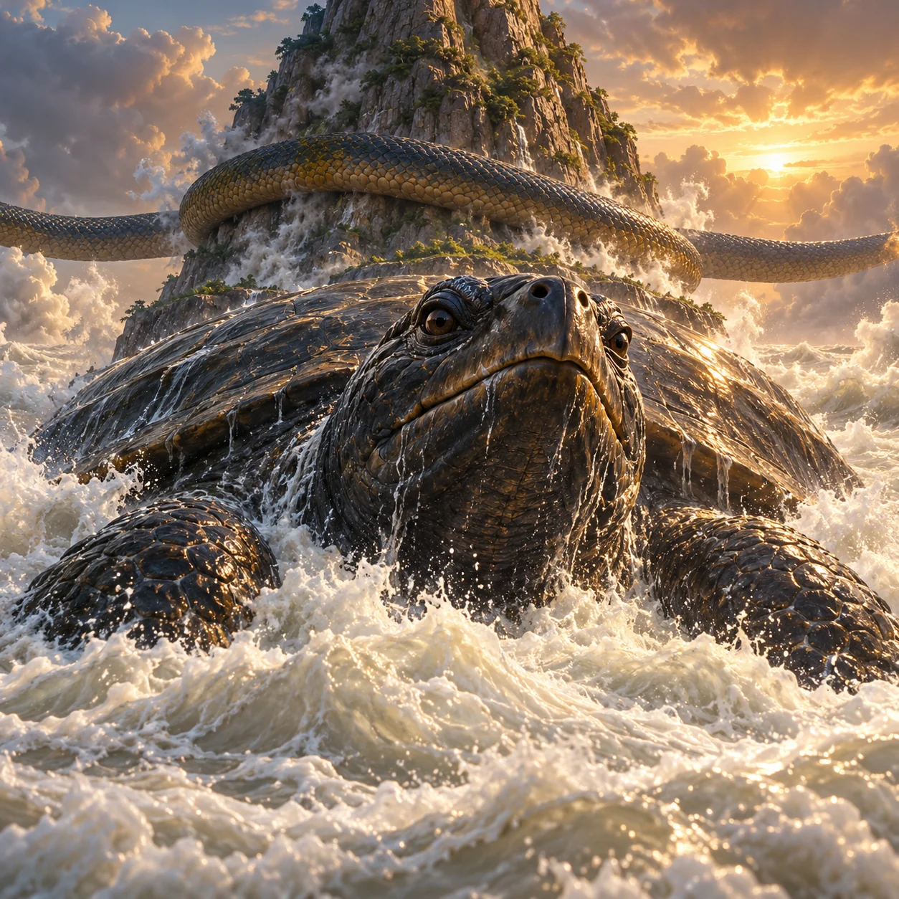
Black giant tortoise Kurma supporting Mandara through the churning of the Ocean of Milk, viewed close at waterline.
Aura: Keagungan muncul dari giant tortoise Vishnu menopang Mount Mandara selama pengadukan Ocean of Milk (kurma-c36/c39/c41), dengan serpent rope Vasuki (c35), tanpa aura atau weapon.
Audit ciri dan sumber
- [object Object]
- [object Object]
- [object Object]
PNG native dilihat: satu giant black tortoise head mengisi depan, dua mata jelas, shell luas menanggung Mandara, kedua kaki depan tampak sementara kaki belakang terhalang air/shell natural. Ular Vasuki sebagai rope melilit gunung, bukan anatomy Kurma, pale foam bergerak c35/c36/c39. Keagungan respectful tanpa senjata, humanoid torso, fire atau glow. Tidak ada teks/watermark/border. Uji Sangar lolos. Root independently viewed BOTH native final variants: A immense black tortoise pushes into churned milk water with Mandara on shell and serpent rope, B huge golden tortoise full four-legged underwater step supports mountain. One tortoise head each, mountain/physical churning source-linked; both awe-inspiring and all seven checks pass.
Review sumberONE original square premium painterly cinematic Mythics illustration of KURMA. Black giant tortoise Kurma supporting Mandara through the churning of the Ocean of Milk, viewed close at waterline.
ANATOMY: ONE enormous BLACK tortoise, one tortoise head, two eyes, one broad domed shell, FOUR stout reptilian legs, one small natural tortoise tail. Complete animal form, NO humanoid torso, extra arms, fish tail, weapons, crown or ornaments. Reverent portrayal of Vishnu's tortoise avatar. [kurma-c01, kurma-c33, kurma-c36, kurma-c43, kurma-c28]
MOMENT: Brace his huge front legs against the moving water while lifting his mighty head toward the near viewer under the mountain's immense burden. Eyes composed and unwavering, never monster-like. His wet head dominates foreground and the mountain rises clearly from the shell behind it.
POWER: Support the actual Mount Mandara resting directly on his shell while the Ocean of Milk is churned; turbulent pale water and heavy foam surge around his limbs, no glowing energy. A single serpent coil around the mountain is Vasuki used as a rope, secondary and not part of Kurma's anatomy. [kurma-c35, kurma-c36, kurma-c39, kurma-c41]
SCALE & CAMERA: Extreme close waterline low-angle portrait of head and front shell, full mountain contact point readable behind; mountain is a physical scale reference, never a tiny decorative rock. Kurma occupies most of frame.
LIGHT & WEATHER: Single warm dawn slit above the churning waters, bronze rim light on black wet shell and powerful deep shadow.
SURFACE: rich tactile cloth, fur, scales or stone appropriate to the specified anatomy, wet water surfaces and physical dust only where mentioned.
SETTING: The primordial Ocean of Milk in the mountain-churning episode. [kurma-c03, kurma-c39]
MOOD: imposing, overwhelming, awe-inspiring or menacing as appropriate to the source; figure and identifying features instantly legible at 200 pixels; never cute, calm, decorative or an ordinary person or animal.
HARD CONSTRAINTS: ONE square image, premium painterly cinematic illustration with tactile brushwork rather than glossy photoreal fashion rendering; no text, lettering, logo, border, frame, watermark, nudity, gore, extra heads, limbs, fingers or duplicated anatomy; no film, game, anime or comic design, no neon outline, generic glow aura, magic ribbons or floating runes. Every effect must belong to the cited deed; environmental lighting is artistic presentation.
Selene
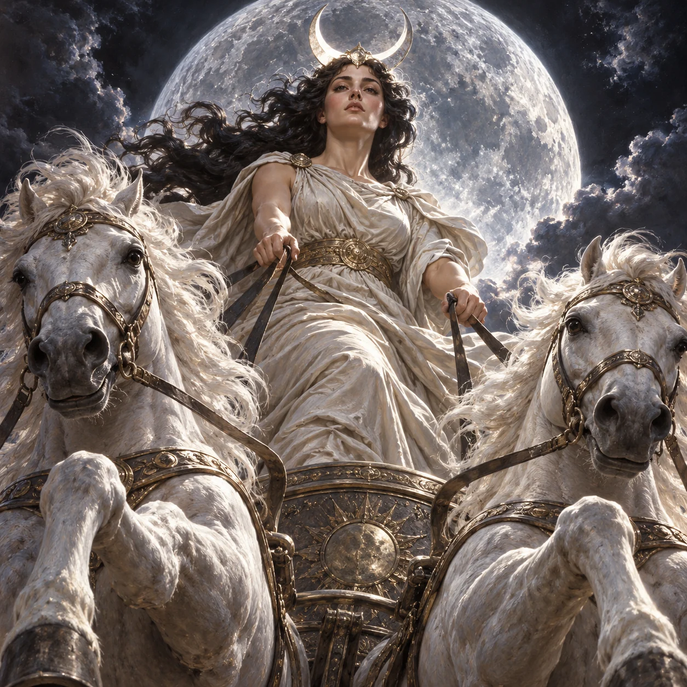
Wingless crescent-crowned Selene driving her two-white-horse chariot toward the viewer.
Aura: Keagungan berasal dari dewi bulan dan perjalanan kereta langit malam (selene-c01/c02), mahkota bulan sabit (c06) serta dua kuda putih (c05/c25); cahaya hanya moonlight tanpa pancaran rekaan.
Audit ciri dan sumber
- [object Object]
- [object Object]
- [object Object]
PNG asli dilihat: Selene tanpa sayap, mahkota crescent sangat jelas, satu kepala/dua mata/dua lengan, jubah buram. Dua kuda putih tampak sebagai dua kepala berbeda dan sedang bergerak menarik kereta. Bulan fisik dominan di belakang, tanpa aura/rune; sudut rendah dan reins aktif menegaskan keagungan. Tidak ada teks, watermark atau bingkai. Uji Sangar lolos. Root independently viewed BOTH native final variants: A nonwinged crescent-crowned frontal chariot deity, B winged gold-crowned diagonal hymnic variant. Each has exactly two white horses, two arms, fully opaque long gown, moon as documented physical light; both pass.
Review sumberONE original square premium painterly cinematic Mythics illustration of SELENE. Wingless crescent-crowned Selene driving her two-white-horse chariot toward the viewer.
ANATOMY: ONE woman with one head, two eyes, two arms, two legs, a LARGE clearly crescent-shaped crown; NO wings on goddess or horses. Fully opaque long dark ivory Greek robe covering torso and legs. TWO silver-white horses pull her antique chariot, exactly two horse heads. [selene-c06, selene-c27, selene-c05, selene-c25]
MOMENT: Drive the night chariot forcefully toward the viewer, leaning forward to pull the reins, robe twisting in the movement; face commanding and elevated toward us. The two white horses rear into the foreground.
POWER: She carries her night journey across the sky as the moon goddess; the moon itself is a clear physical silver lunar disc behind her, moonlight illuminates the robe and white horses. No emitted magic beams or energy trail. [selene-c01, selene-c02]
SCALE & CAMERA: Tight frontal extreme low-angle chariot composition; Selene's crescent crown, face and upper body fill central upper two-thirds, two horse heads clearly separate along lower corners, no distant tiny goddess.
LIGHT & WEATHER: One dominant silver moon backlight, deep midnight-brown sky, dramatic silver rim light and tactile robe folds.
SURFACE: rich tactile cloth, fur, scales or stone appropriate to the specified anatomy, wet water surfaces and physical dust only where mentioned.
SETTING: The vast dark night sky on her documented celestial journey. [selene-c02]
MOOD: imposing, overwhelming, awe-inspiring or menacing as appropriate to the source; figure and identifying features instantly legible at 200 pixels; never cute, calm, decorative or an ordinary person or animal.
HARD CONSTRAINTS: ONE square image, premium painterly cinematic illustration with tactile brushwork rather than glossy photoreal fashion rendering; no text, lettering, logo, border, frame, watermark, nudity, gore, extra heads, limbs, fingers or duplicated anatomy; no film, game, anime or comic design, no neon outline, generic glow aura, magic ribbons or floating runes. Every effect must belong to the cited deed; environmental lighting is artistic presentation.
Count Dracula
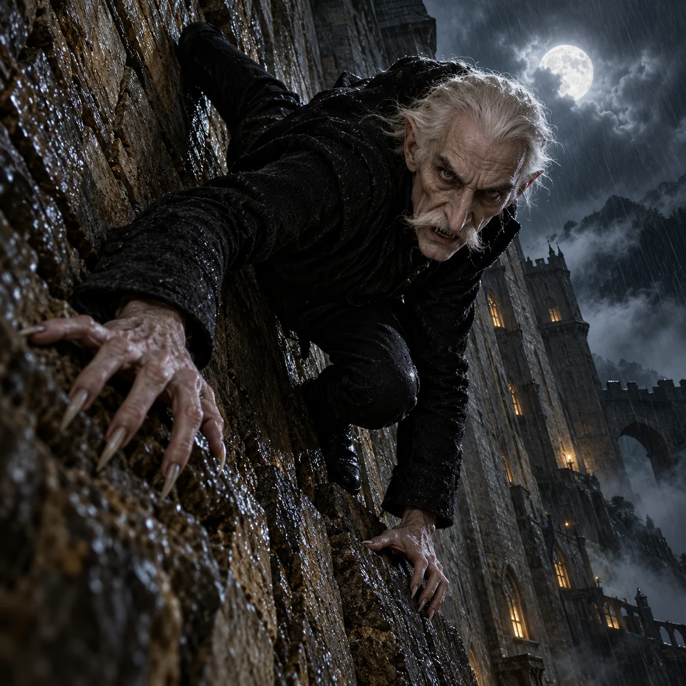
Stoker's elderly black-clothed Count descending his castle wall head-first in lizard fashion, fully human anatomy.
Aura: Predatory pallor, sharp teeth/nails and unnatural wall descent (count-dracula-c02/c03/c04/c19), with physical storm/fog of c09; no generic aura.
Audit ciri dan sumber
- [object Object]
- [object Object]
- [object Object]
- [object Object]
Native viewed: old pale moustached human Count crawling diagonally head-first down a wet vertical castle wall. Two hands with long fine pointed nails grip masonry, two human legs brace above; hooked nose, sharp teeth and pointed ears visible. All-black opaque clothes, no literal reptile body. Low close composition and storm/moonlit castle establish threat; no text, gore, watermark or borrowed film costume. Root independently viewed BOTH native final variants: A close hairy-palm threat and B head-down castle-wall descent; pointed ears, white moustache, aquiline pale face, sharp nails/teeth, black clothing. Both menacing/source-consistent; B selected has dramatic documented action.
Review sumberONE original square premium painterly cinematic Mythics illustration. Imposing undeniable main subject, high-contrast low-key dark walnut/antique gold palette, physically textured surfaces, strong silhouette legible at 200 pixels. HARD CONSTRAINTS: no text, lettering, pseudo-script, logo, watermark, signature, border or frame; no borrowed film/game/anime/comic design; no nudity, erotic scene or explicit gore; no generic glowing aura, neon lines, energy ribbons, floating runes, or unsupported anatomy.
ANATOMY: Original literary Dracula, old tall man with LONG WHITE MOUSTACHE, clean-shaven chin, strongly aquiline nose, very pale complexion and pointed ear tops, visibly sharp protruding white teeth. Fully opaque black wool clothes head to foot, no colored cape, no movie tuxedo, no Orlok bald design. One head, two eyes, two human arms and two human legs, fine sharp long nails. [count-dracula-c02/c03/c04] MOMENT: Descend the vertical castle wall diagonally SIDEWAYS HEAD-FIRST in Harker's lizard fashion, both human hands grip masonry, one knee pressed to stone and the other leg braced upward. Crucially he remains anatomically HUMAN, no scales or reptile transformation; gaunt face turns to threaten the viewer below. [count-dracula-c19] POWER: gravity-defying lizard-fashion crawling down wall documented in novel, natural storm rain and fog under his domain, no beams. [count-dracula-c09/c19] SCALE & CAMERA: extreme low camera almost pressed against the wall, full bent body looming diagonally close above viewer, tiny castle windows recede far beneath at right, no literal giant anatomy. LIGHT & WEATHER: cold moonlit edge through rain, dark warm stone recesses; one main moon source. SURFACE: rough black wool, wet stone chips, sharp fingernails pressing stone. SETTING: sheer exterior of decaying Carpathian castle, deep mountain darkness only at edge. [count-dracula-c32] MOOD: terrifying unnatural movement, not standing portrait.
Cthulhu
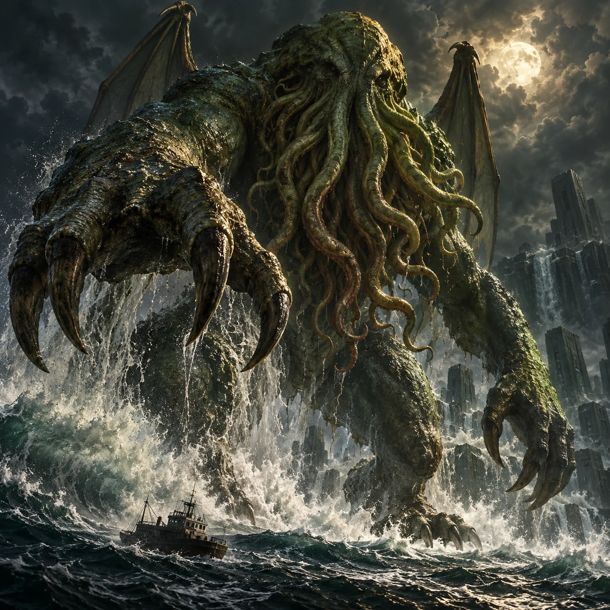
Lovecraft's green sticky, tentacle-faced scaly mountainlike Cthulhu emerging through displaced ocean waves, narrow rudimentary wings behind.
Aura: Mountainlike body c09, massive claw/feeler anatomy c01/c02 and physically wave-raising movement c10 convey cosmic threat without generic glow.
Audit ciri dan sumber
- [object Object]
- [object Object]
- [object Object]
Native viewed: massive green scaly/rubbery anthropoid creature emerges through waves over a tiny ship, pulpy octopus head and dense facial feelers, two prodigious foreclaws, clawed near hind foot and rear leg partly behind sea; two long narrow upright wings. Ocean displacement/foam physical. One head, no horns, clothes/armor, weapons, text or gore. Full source-scale composition dominates. Root independently viewed BOTH native final variants: A immense scaled/feelerd/clawed/wings creature over tiny ship and B sea-level foreclaw swimming confrontation. Two arms and one octopoid head clear, wave displacement physical, no film design or gore. Both pass seven Sangar criteria.
Review sumberONE original square premium painterly cinematic Mythics illustration. Imposing undeniable main subject, high-contrast low-key dark walnut/antique gold palette, physically textured surfaces, strong silhouette legible at 200 pixels. HARD CONSTRAINTS: no text, lettering, pseudo-script, logo, watermark, signature, border or frame; no borrowed film/game/anime/comic design; no nudity, erotic scene or explicit gore; no generic glowing aura, neon lines, energy ribbons, floating runes, or unsupported anatomy.
ANATOMY: Cthulhu from Lovecraft's text: ONE pulpy octopuslike head with face a dense mass of writhing feelers, GREEN sticky scaly rubbery vaguely anthropoid body, two enormous clawed forelimbs and two clawed hind feet, TWO long NARROW rudimentary wings folded upright behind shoulders; wing membranes narrow, not colossal angel/bat sails. No horns, armor, weapons, extra heads or fantasy jewelry. [cthulhu-c01/c02/c08] MOMENT: Stumble out of the black sea and heave one vast clawed forelimb toward camera, tentacled face angled down toward the small viewer, water sliding down body. POWER: mountainlike enormity, enormous bodily strokes raise real ocean walls of water with foam and spray, no magic energy or glowing eyes. [cthulhu-c09/c10] SCALE & CAMERA: extreme low sea-level full-body confrontation; Cthulhu fills entire square crown of head through partly submerged clawed feet; tiny unmanned distant vessel at lower edge is editorial scale comparison for ship pursuit. LIGHT & WEATHER: narrow storm moon break as single source, deep green-black shadows, antiqued warm edge on wet scales, sea spray. SURFACE: sticky rubber flesh, scales, brine, froth. SETTING: sea outside R'lyeh, submerged dark geometric ruined stone only peripheral. [cthulhu-c06] MOOD: incomprehensible cosmic dread, awe-inspiring and menacing, no humanoid nudity or exposed genitalia.
Oceanus
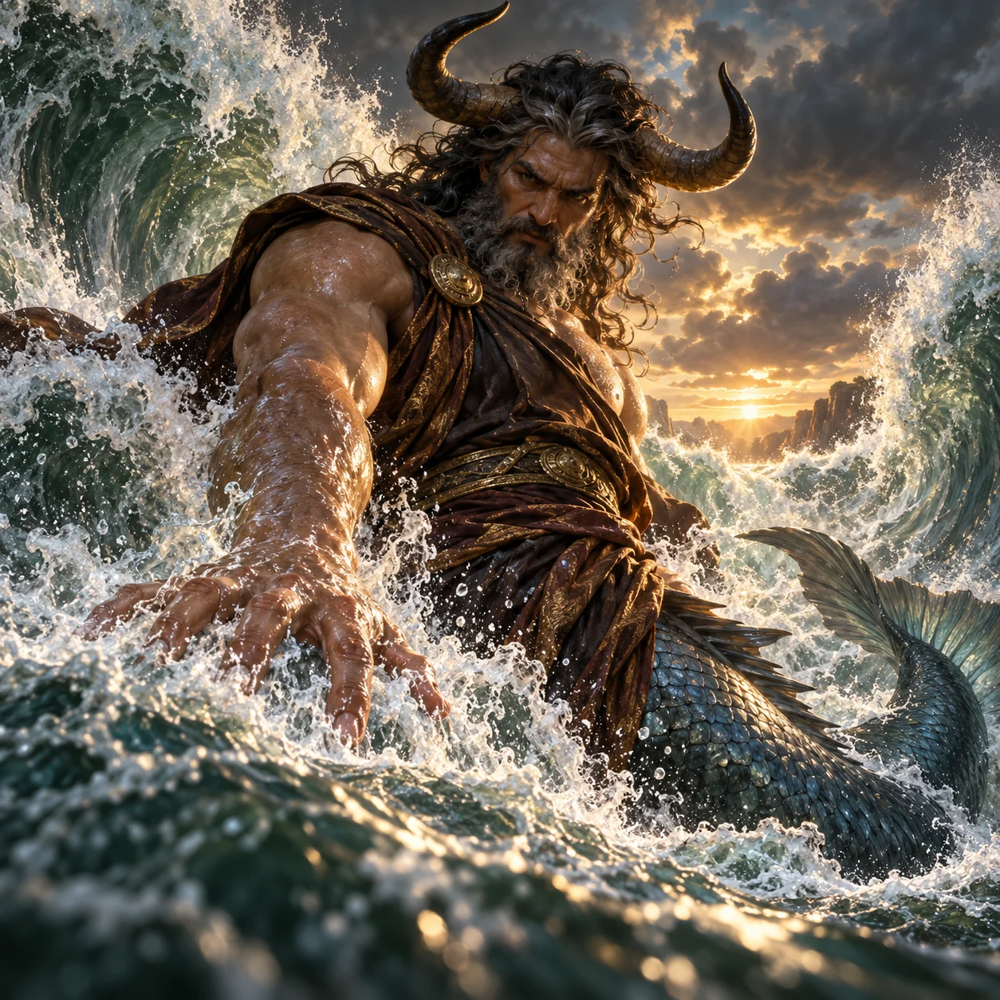
Bull-horned Oceanus with a serpentine fish tail rising through a wall of freshwater waves.
Aura: Kekuatan nyata adalah gelombang besar yang Oceanus sebabkan (oceanus-c27), dengan tubuh bertanduk banteng/ekor ikan serpentin (c08/c12) di sungai air tawar dunia (c02/c04), tanpa trident atau lightning.
Audit ciri dan sumber
- [object Object]
- [object Object]
- [object Object]
PNG native dilihat: dua tanduk banteng jelas, kepala/torso manusia berjanggut, fishtail bersisik dan fin menggantikan kaki, satu tangan besar menghantam dekat air dengan tatapan keras ke viewer. Gelombang besar di dua sisi c27. Cloth antique gelap editorial, tanpa trident/crab horns atau extra limbs. Tidak ada teks/watermark/aura. Uji Sangar lolos; tangan kedua sebagian tertutup cloth/water. Root independently viewed BOTH native final variants: A close bull-horned human upper body and fish tail pushes waves, B coiling serpentine fish tail dominates earth-encircling river. Two horns/two arms, no Poseidon trident or unclaimed energy; waves source-supported. Both pass all Sangar checks.
Review sumberONE original square premium painterly cinematic Mythics illustration of OCEANUS. Bull-horned Oceanus with a serpentine fish tail rising through a wall of freshwater waves.
ANATOMY: ONE horned male deity with one head, two eyes, TWO bull horns, human upper torso, TWO human arms, and ONE serpentine fish tail instead of human legs. Dark bronze-and-walnut fully opaque cloth covers his chest and waist. No trident, crab claws, extra tail or legs. [oceanus-c08, oceanus-c12]
MOMENT: Rise forcefully through the freshwater wave and thrust one broad hand downward into the near water, face looking down toward the viewer, wet hair and forceful non-neutral expression. Both horns clearly silhouetted above his face.
POWER: Great waves pile up as he acts to stop passage, physically spilling in curling sheets with spray and turbulent water. No lightning or magic ribbons. [oceanus-c27]
SCALE & CAMERA: Low waterline camera, close head-and-torso confrontation; horns, face, hands and beginning of his scaled fish tail visibly dominate seventy-five percent of the frame. No nude chest.
LIGHT & WEATHER: One warm horizon sun slit through deep clouds, wet golden rimlight and dramatic shadow.
SURFACE: rich tactile cloth, fur, scales or stone appropriate to the specified anatomy, wet water surfaces and physical dust only where mentioned.
SETTING: The great freshwater stream at the western edge of the earth, not an ordinary salt-sea beach. [oceanus-c02, oceanus-c24]
MOOD: imposing, overwhelming, awe-inspiring or menacing as appropriate to the source; figure and identifying features instantly legible at 200 pixels; never cute, calm, decorative or an ordinary person or animal.
HARD CONSTRAINTS: ONE square image, premium painterly cinematic illustration with tactile brushwork rather than glossy photoreal fashion rendering; no text, lettering, logo, border, frame, watermark, nudity, gore, extra heads, limbs, fingers or duplicated anatomy; no film, game, anime or comic design, no neon outline, generic glow aura, magic ribbons or floating runes. Every effect must belong to the cited deed; environmental lighting is artistic presentation.
Helios
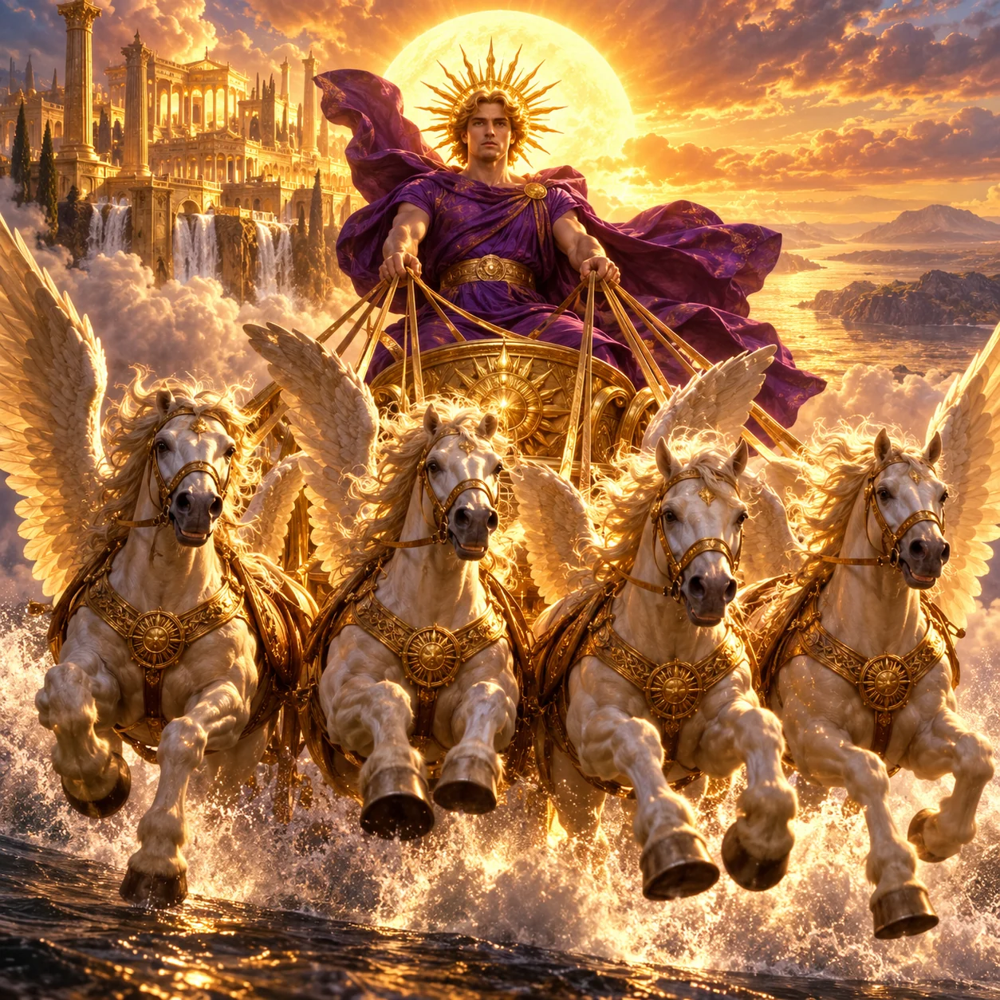
Frontal four-horse dawn ascent
Aura: Sun-bearing chariot c02/c12 with four winged horses and solar crown, one actual dominant sun, no generic aura
Audit ciri dan sumber
- [object Object]
- [object Object]
- [object Object]
Empat kepala kuda bersayap berbeda, kereta emas, pemuda berjubah ungu dan mahkota solar; sumber cahaya matahari dan gerak kereta jelas. Root independently viewed BOTH native final variants: Empat kepala kuda bersayap berbeda, kereta emas, pemuda berjubah ungu dan mahkota solar; sumber cahaya matahari dan gerak kereta jelas. Root melihat kedua PNG native secara langsung; keduanya lulus tujuh cek visual.
Review sumberONE original square premium painterly cinematic Mythics illustration of HELIOS, Greek Titan sun god who carries the sun across the sky each day.
ANATOMY: one youthful usually beardless male head, exactly two arms, fully opaque PURPLE robes; documented shining solar aureole/crown of sun rays at head; ONE golden chariot drawn by EXACTLY FOUR WINGED HORSES, count all four distinct horses with one head/two wings/four legs each. [helios-c01, helios-c02, helios-c12, helios-c15, helios-c18]
MOMENT: drive the golden chariot straight toward the viewer as FOUR winged horses surge upward, reins visibly held in two hands, purple robes whip backward, direct commanding stare.
POWER: the actual sun carried across the sky is behind his head and golden chariot; solar glare burns across clouds and sea, crown rays allowed documented solar aureole, no random flame beams or lightning. [helios-c01, helios-c02, helios-c12, helios-c15, helios-c18]
SCALE & CAMERA: extreme low front full chariot, deity face upper third clear, ALL four horse heads distinct across lower frame and visible wings, no fifth horse.
LIGHT & WEATHER: a single warm side/backlight, deep walnut shadows and antique gold highlights; low-key cinematic contrast, dramatic airborne dust or natural spray appropriate to scene; fire/sun/forge variants use that actual documented fire or sun as sole dominant light instead of external glow.
SURFACE: hammered worn gold chariot, heavy purple cloth, horses' real hair and feathers, physical solar illumination.
SETTING: emerge at dawn from golden palace on River Okeanos at earth's far eastern ends, sky chariot above the river. [helios-c01, helios-c02, helios-c12, helios-c15, helios-c18]
MOOD: overwhelming, imposing and awe-inspiring; malign Loki menacing, living Hindu Agni revered; never cute, neutral, calm or decorative.
HARD CONSTRAINTS: no text, lettering, logo, border, frame or watermark; no extra heads, limbs or fingers; no design borrowed from film, game, anime or comic; no nudity or explicit gore; opaque clothing covers torso and legs; no generic glow aura, neon outline or energy ribbons. ONE complete square image, not a collage.
Huitzilopochtli
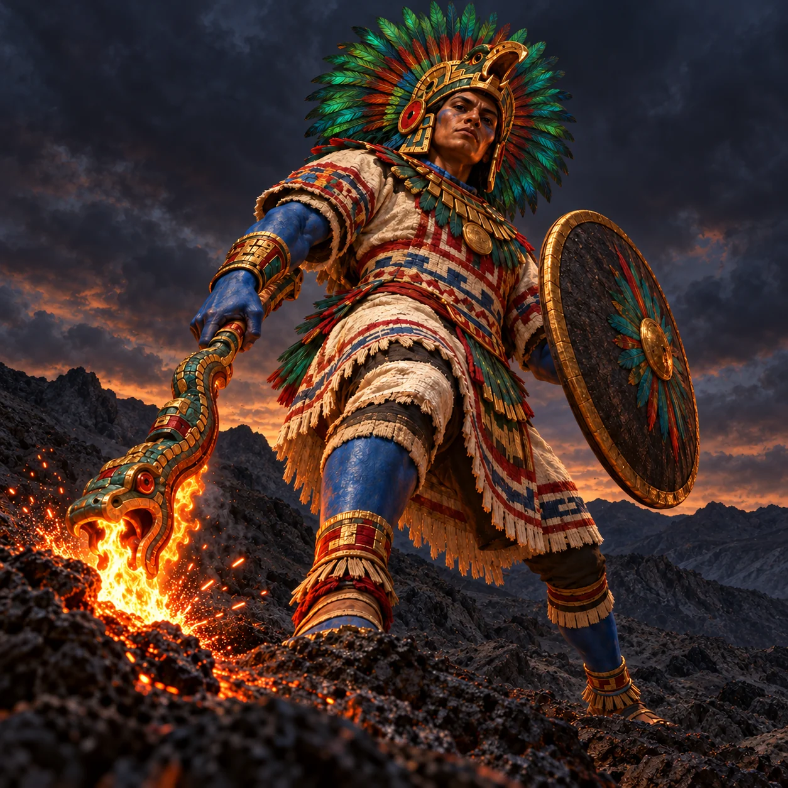
Blue-painted Huitzilopochtli stepping toward the low viewer on Mt Coatepec, with hummingbird-feather helmet, shield, and fire-serpent atlatl contacting rock.
Aura: His fire-serpent weapon (huitzilopochtli-c02/c21) physically burns foreground stone; blue-painted limbs and hummingbird-feather helmet (c21/c22) identify the formidable solar-war deity (c06).
Audit ciri dan sumber
- [object Object]
- [object Object]
- [object Object]
- [object Object]
Corrected native inspected: one head/two eyes/two arms/two legs, opaque torso/lower garments, blue-painted forearms and lower legs, one snake-shaped atlatl and one separate shield. Left grip naturally occluded by shield; no extra hand inferred. Complete compact helmet/feather fan is inside image. Active step dominates low angle, weapon flame visibly contacts foreground stone; distant mountains inert and no other flame power. No text/watermark/frame/gore/victims. All seven Sangar answers yes. Root independently viewed BOTH native final variants: A full forward warrior step at Coatepec and B close Temple Mayor contact. Blue limbs, hummingbird helmet, shield and flaming snake atlatl clear; two arms, opaque torso. Mountains in corrected A inert, fire only from documented weapon. Both pass; B peripheral feather-tip crop does not hide helmet identity.
Review sumberUse case: precise-object-edit. Correct this original square premium painterly Mythics illustration of HUITZILOPOCHTLI, the respectfully depicted Aztec sun and war deity.
CHANGE EXACTLY TWO THINGS:
1. REMOVE ALL ERUPTING VOLCANOES, LAVA, FLAME AND GLOWING CRATERS from the background. Replace all distant mountains with inert dark rocky slopes of Mt Coatepec (huitzilopochtli-c09), under a low dark dusk sky. Mountains are NOT erupting. There is NO volcanic activity, flowing lava or fire in the sky. The ONLY fire is the localized real flame from his handheld fire-serpent weapon (huitzilopochtli-c02) touching the foreground rock, with its own limited sparks/thin smoke. Keep these physical weapon flames and rock contact unchanged.
2. Replace the excessively wide cropped helmet feather fan with a slightly smaller COMPACT fan of small iridescent HUMMINGBIRD FEATHERS (huitzilopochtli-c22). Every feather tip and the whole helmet must fit fully INSIDE the square, with dark sky margin above and beside the plume. No feather touches or crosses the image edge. Keep his face and fitted helmet placement unchanged; adjust only feather lengths and fan size to fit completely.
PRESERVE EXACTLY: same one-headed two-armed two-legged deity, commanding low gaze, all fully opaque tunic/clothing, blue-painted exposed forearms/hands and lower legs (huitzilopochtli-c21), same two distinct hands, right hand holding the snake-shaped spear-thrower atlatl with serpent-shaped head, left hand holding a separate round shield (c21), same forward stepping pose, same extreme low camera, same rich painterly textures and square composition. Do not convert the snake-shaped spear-thrower into a separate creature, sword, additional weapon or energy ribbon. Keep the weapon and shield in the same hands.
No text, writing, pseudo-glyphs, watermark, logo, border, frame, nudity, gore, victims, extra limbs, generic aura, runes, borrowed film/game/anime/comic designs. Only the above two corrections; retain everything else.
Minerva
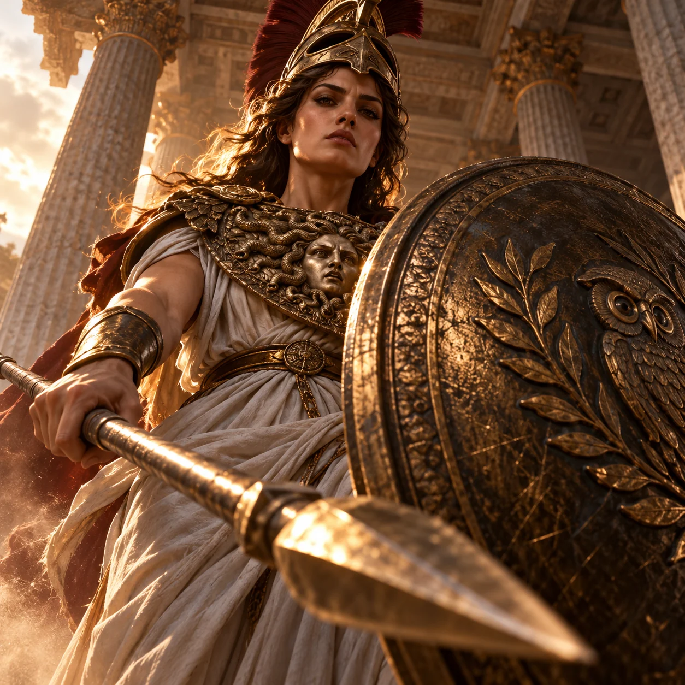
Confrontational shield advance
Aura: War/victory domain c01 and shield/lance/aegis iconography c18/c37, no invented effect
Audit ciri dan sumber
- [object Object]
- [object Object]
- [object Object]
Root saw native square: advancing shield and foreshortened lance, clear helmet and embossed Medusa aegis, two arms, opaque chiton; powerful direct gaze fills frame. All seven Sangar checks pass, no emitted magic. Root independently viewed BOTH native final variants: A close shield/lance confrontation and B full temple-step advance; helmet, Medusa aegis and opaque chiton clear, two arms. Seven Sangar criteria pass; A sharper thumbnail identity.
Review sumberONE original square premium painterly cinematic Mythics illustration of MINERVA, Roman goddess of wisdom, crafts, war and victory.
ANATOMY: one head, exactly two arms; Corinthian helmet pushed back to expose face, opaque belted chiton, a broad aegis bearing a clearly carved Medusa face, one shield on her left arm and one lance in right hand. [minerva-c01, minerva-c18, minerva-c22, minerva-c37]
MOMENT: drive her broad shield right toward the viewer and lower her lance across the foreground while stepping forward; fierce focused eyes stare down at us.
POWER: No emitted supernatural effect; danger through forceful shield-and-lance movement and documented war/victory domain, no petrifying beam. [minerva-c01, minerva-c18, minerva-c22, minerva-c37]
SCALE & CAMERA: extreme ground-level close portrait from inside shield arc; face and helmet occupy upper third, shield lower half, subject fills 85 percent.
LIGHT & WEATHER: a single warm side/backlight, deep walnut shadows and antique gold highlights; low-key cinematic contrast, dramatic airborne dust or natural spray appropriate to scene; fire/sun/forge variants use that actual documented fire or sun as sole dominant light instead of external glow.
SURFACE: scratched bronze, embossed aegis face, woven opaque cloth, dusty marble.
SETTING: her Capitol temple in Rome, stone pillars only as secondary framing. [minerva-c01, minerva-c18, minerva-c22, minerva-c37]
MOOD: overwhelming, imposing and awe-inspiring; malign Loki menacing, living Hindu Agni revered; never cute, neutral, calm or decorative.
HARD CONSTRAINTS: no text, lettering, logo, border, frame or watermark; no extra heads, limbs or fingers; no design borrowed from film, game, anime or comic; no nudity or explicit gore; opaque clothing covers torso and legs; no generic glow aura, neon outline or energy ribbons. ONE complete square image, not a collage.
Succubus
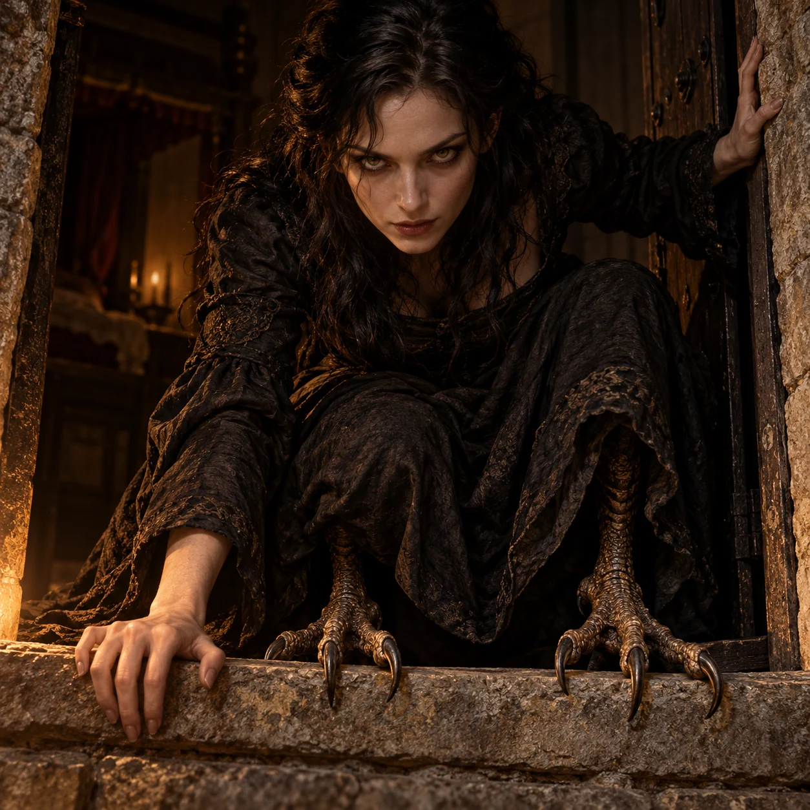
Fully clothed adult woman-form succubus with two bird-taloned feet crouching forward as a nightmare visitor.
Aura: Uncanny documented bird claws c07 and predatory dream-visitor posture in c01/c04 context establish menace; no invented power glow.
Audit ciri dan sumber
- [object Object]
- [object Object]
- [object Object]
Native viewed: mature woman crouches forward at stone doorway with two clearly separate scaly bird feet and sharp talons hooking the sill, two human hands and one focused uncanny face. Dark opaque gown fully covers torso, arms and hips; no horns/wings/tail. Candlelight and predatory movement make a nightmare threat, no erotic interaction, text or gore. Root independently viewed BOTH native final variants: A stalking clothed woman with two bird-taloned feet and B separate serpent-tail variant beside empty bed. Distinct anatomies kept separate per c07; two human hands each, no erotic scene, aura or unclaimed horns. Both pass.
Review sumberONE original square premium painterly cinematic Mythics illustration. Imposing undeniable main subject, high-contrast low-key dark walnut/antique gold palette, physically textured surfaces, strong silhouette legible at 200 pixels. HARD CONSTRAINTS: no text, lettering, pseudo-script, logo, watermark, signature, border or frame; no borrowed film/game/anime/comic design; no nudity, erotic scene or explicit gore; no generic glowing aura, neon lines, energy ribbons, floating runes, or unsupported anatomy.
ANATOMY: A succubus in documented woman-with-BIRDLIKE-CLAWS variant. One adult human woman's head, two eyes, TWO human arms/hands, TWO legs ending in clearly visible bird talons rather than human feet. Beautiful yet unsettling mature face with focused predatory stare. FULLY OPAQUE modest worn black medieval gown covers shoulders, arms, chest, torso and hips; hem lifted by bent legs only enough to expose two scaly BIRD FEET with sharp talons. No horns, wings, snake tail or claws added to hands. [succubus-c07] MOMENT: Crouch forward on the edge of a stone doorway within an adult sleeper's nightmare, grip doorway with one hand and press the other forward, both bird talons prominently hook the foreground sill. No erotic pose, no sexual contact, no seduction scene. POWER: documented dream visitation / sleep paralysis, conveyed by claustrophobic perspective and nightmare threat only; no magical aura or invented draining beam. [succubus-c01/c04] SCALE & CAMERA: extreme low close full crouching body; face and both TALON FEET readable, figure fills 85 percent, no sleeper needed. LIGHT & WEATHER: one small candle off-frame at low left, warm lit claws and face, profound shadows. SURFACE: wrinkled rough opaque cloth, leathery bird toes, worn stone. SETTING: editorial old European sleeping-chamber doorway in nightmare. [succubus-c01] MOOD: dangerous uncanny nightmare visitor; no pinup, no lingerie, no cute demon, no glamour photo.
Agni
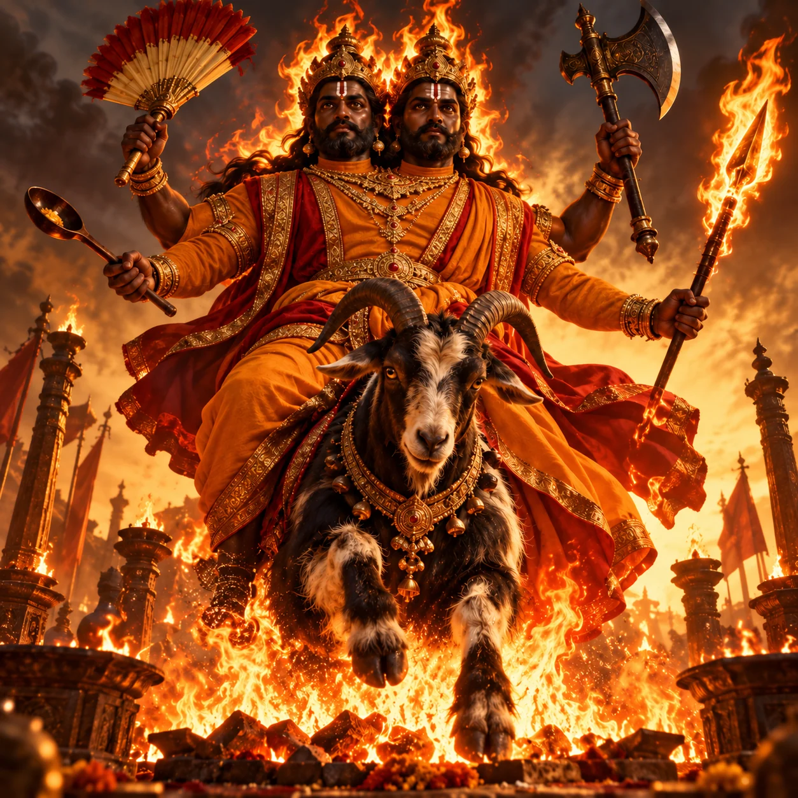
Two-headed mounted sacred fire advance
Aura: Two-headed four-armed goat-mounted form c08 and fire/offerings c01/c06 with actual flaming attribute c26
Audit ciri dan sumber
- [object Object]
- [object Object]
- [object Object]
Dua kepala, empat lengan dan empat tangan beratribut terpisah; torso tertutup; satu kambing, api persembahan nyata. A lebih jelas memperlihatkan tunggangan, B memperlihatkan aksi persembahan. Root independently viewed BOTH native final variants: Dua kepala, empat lengan dan empat tangan beratribut terpisah; torso tertutup; satu kambing, api persembahan nyata. A lebih jelas memperlihatkan tunggangan, B memperlihatkan aksi persembahan. Root melihat kedua PNG native secara langsung; keduanya lulus tujuh cek visual.
Review sumberONE original square premium painterly cinematic Mythics illustration of AGNI, Hindu fire deity and sacred carrier of offerings, respectfully awe-inspiring.
ANATOMY: exactly TWO distinct heads side by side, both faces entirely visible, FOUR arms and FOUR hands separated clearly with ONE implement in each: fan, sacrificial ladle, axe, flaming javelin. Dark skin, opaque sacred tunic and long lower drapery. ONE goat mount with exactly one head, two horns and four legs, not a horse. [agni-c01, agni-c06, agni-c08, agni-c26]
MOMENT: advance on the bounding goat through a towering sacrificial flame, both heads gaze toward the viewer, four clearly separated arms raise and present their distinct implements.
POWER: sacrificial fire physically rises from offerings below and reflects on both faces; javelin bears real fire as documented attribute; no generic aura, no random destructive lightning. [agni-c01, agni-c06, agni-c08, agni-c26]
SCALE & CAMERA: extreme low full-body frontal shot, BOTH heads side by side with no overlap, goat lower foreground, fire deity fills 90 percent.
LIGHT & WEATHER: a single warm side/backlight, deep walnut shadows and antique gold highlights; low-key cinematic contrast, dramatic airborne dust or natural spray appropriate to scene; fire/sun/forge variants use that actual documented fire or sun as sole dominant light instead of external glow.
SURFACE: dark textured skin, woven saffron and antique red robes, dark metal axe, wood ladle, goat hair, tangible flame.
SETTING: sacred offering ground with a great sacrificial fire, atmospheric devotional staging rather than ordinary campfire. [agni-c01, agni-c06, agni-c08, agni-c26]
MOOD: overwhelming, imposing and awe-inspiring; malign Loki menacing, living Hindu Agni revered; never cute, neutral, calm or decorative.
HARD CONSTRAINTS: no text, lettering, logo, border, frame or watermark; no extra heads, limbs or fingers; no design borrowed from film, game, anime or comic; no nudity or explicit gore; opaque clothing covers torso and legs; no generic glow aura, neon outline or energy ribbons. ONE complete square image, not a collage.
TARGETED REVISION: Preserve the entire composition, the TWO heads, four documented implements, exactly FOUR arms/FOUR hands and ONE goat. Add a fully OPAQUE high-neck saffron tunic under all necklaces and drapery, covering the entire chest, nipples and abdomen; no exposed chest whatsoever. This is a surgical clothing/anatomy correction only. No other changes, no text.
Freyja
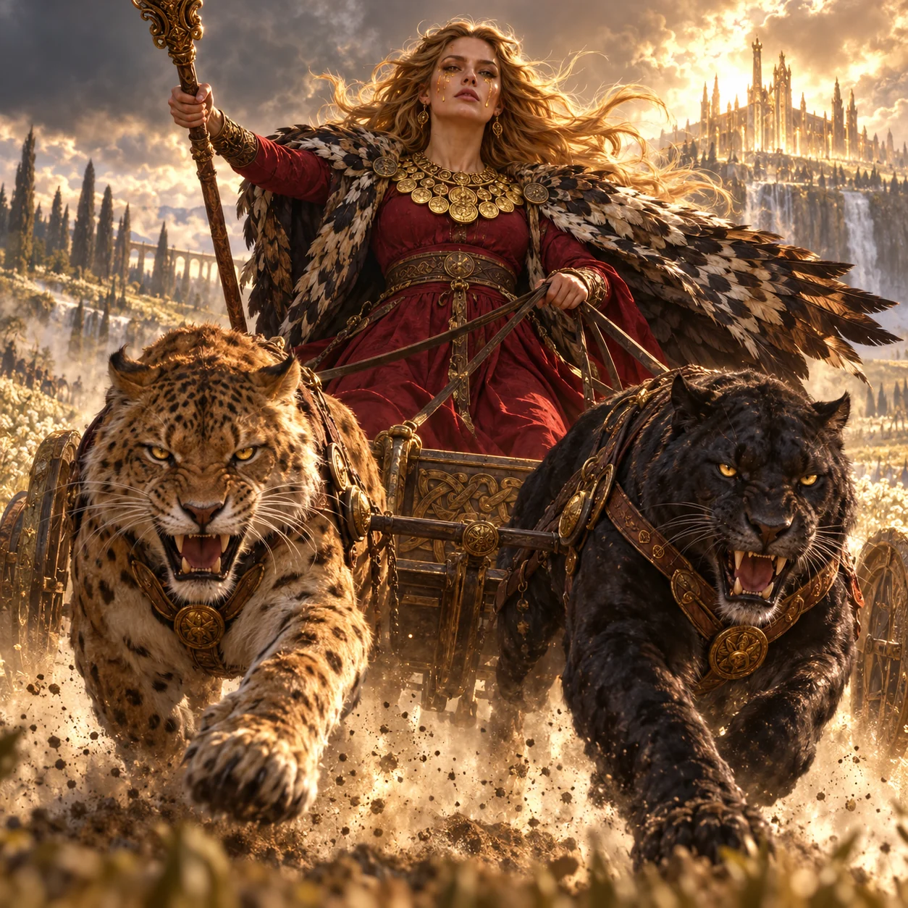
Two-cat chariot arrival
Aura: Documented two-cat chariot c05, seidr staff c03 and golden tears c21 convey divine identity without invented energy
Audit ciri dan sumber
- [object Object]
- [object Object]
- [object Object]
Native seen by root: active chariot with exactly two great cats, two deity arms, staff, Brisingamen and falcon-feather garment; fully opaque gown, clear golden tears. All Sangar checks pass, dust physical only. Root independently viewed BOTH native final variants: A active two-great-cat chariot and B staff-lift close portrait; gold tears physically visible, feather garment/Brisingamen clear, opaque clothing. Seven Sangar criteria pass; A strongest active mythology.
Review sumberONE original square premium painterly cinematic Mythics illustration of FREYJA, Norse Vanir goddess associated with battle, seidr and wealth.
ANATOMY: one human head, exactly two arms; striking Brisingamen necklace broad and clear; opaque dark red gown with high covered torso, falcon-feather cloak; holds one seidr staff; in the chariot variant EXACTLY TWO great cats draw one chariot, both cats clearly distinct. [freyja-c03, freyja-c05, freyja-c07, freyja-c10, freyja-c20, freyja-c21]
MOMENT: drive into the foreground standing braced in her chariot, raising seidr staff as both enormous cats bound toward the viewer; direct commanding gaze.
POWER: Her documented golden tears appear as actual small molten-looking gold droplets on cheeks in portrait, not beams or ribbons; in chariot scene only physical dust kicked by the two cats; no lightning or generic magic. [freyja-c03, freyja-c05, freyja-c07, freyja-c10, freyja-c20, freyja-c21]
SCALE & CAMERA: extreme low ground view full active chariot deity, cats low foreground, face and necklace large and clear, fills 90 percent.
LIGHT & WEATHER: a single warm side/backlight, deep walnut shadows and antique gold highlights; low-key cinematic contrast, dramatic airborne dust or natural spray appropriate to scene; fire/sun/forge variants use that actual documented fire or sun as sole dominant light instead of external glow.
SURFACE: ruffled real falcon feathers, scratched gold necklace, heavy wool, dusty fur.
SETTING: Folkvangr, her heavenly dwelling and field where she receives half the battle dead; no modern designs or corpses/gore. [freyja-c03, freyja-c05, freyja-c07, freyja-c10, freyja-c20, freyja-c21]
MOOD: overwhelming, imposing and awe-inspiring; malign Loki menacing, living Hindu Agni revered; never cute, neutral, calm or decorative.
HARD CONSTRAINTS: no text, lettering, logo, border, frame or watermark; no extra heads, limbs or fingers; no design borrowed from film, game, anime or comic; no nudity or explicit gore; opaque clothing covers torso and legs; no generic glow aura, neon outline or energy ribbons. ONE complete square image, not a collage.
Viracocha
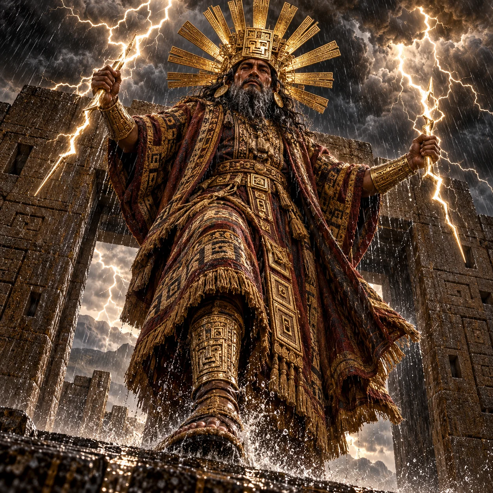
Alive bearded human-form Viracocha interpreting Tiwanaku sun-ray crown and two hand-held thunderbolts, striding out through rain and storm.
Aura: Tiwanaku solar ray crown and thunderbolts c19, rain/physical storm lightning c19/c22, bearded creator c02/c01 and low active stride provide sacred grandeur.
Audit ciri dan sumber
- [object Object]
- [object Object]
- [object Object]
Native viewed: bearded human-appearing brown-skinned creator takes a forceful forward step from gateway in opaque heavy woven robe; two hands each hold a distinct gold zigzag thunderbolt with actual sky lightning, wide solar-ray crown above. Rain/wet cheek streaks and splashing stone, imposing low view. One head/two arms, no extra limbs, text, gore or generic aura. Root independently viewed BOTH native final variants: A bearded ray-crowned creator strides with one thunderbolt in each hand in documented rain, B distinct old bearded robed staff-bearer emerges from lake at first sun. Two arms/opaque dress, no source variants mixed. Decorative geometric motifs not readable letters. Both pass seven checks.
Review sumberONE original square premium painterly cinematic Mythics illustration. Imposing undeniable main subject, high-contrast low-key dark walnut/antique gold palette, textured brushwork and physically tactile surfaces, legible silhouette at 200 pixels. HARD CONSTRAINTS: no text, lettering, pseudo-script, logo, watermark, signature, border or frame; no borrowed film/game/anime/comic design; no nudity or explicit gore; no generic glowing aura, neon lines, energy ribbons, floating runes, or unsupported anatomy.
ANATOMY: VIRACOCHA, Andean supreme creator in an original human-appearing BEARDED male form, two human arms/hands and two legs, long opaque woven dark gold/crimson robe. An immense antique-gold CROWN WITH SUN RAYS fully inside image, ray crown broader than head. Hold ONE thunderbolt in EACH hand, both distinct hands readable, no staff in this variant. Tears streak his face in the storm, referring to iconographic tears representing rain. Beard and human form c02, hand thunderbolts and solar ray crown c19; natural Andean brown skin is editorial, do not use unsupported European white-god portrayal. [viracocha-c02/c19] MOMENT: Raise and extend both thunderbolt-bearing arms toward the storm, bend into a forceful forward step out of the dark gateway; stare downward at viewer with immense sovereign calm, not an ordinary standing man. POWER: actual forked lightning connects the hand-held thunderbolts to thunderclouds, rain lashes the gateway and water splashes under his feet; sun/storm sovereignty c22 and thunderbolts/tears c19, no extra colored energy ribbons or halo. SCALE & CAMERA: extreme worm-eye full figure fills 90 percent of square, ray crown and two lightning hands clearly readable; gateway pillars peripheral, apparent divine monumentality by tight perspective. LIGHT & WEATHER: a single lightning flash is dominant source, warm antique-gold reflected accents, black storm darkness, forceful rain. SURFACE: wet rough woven robe, carved gold rays, beard heavy with rain, weathered stone. SETTING: alive sacred rendering before the massive Tiwanaku gateway, not a sculpture. [viracocha-c19] MOOD: overwhelming respectful divine creator, awe not monstrous villain.
Bull Demon King
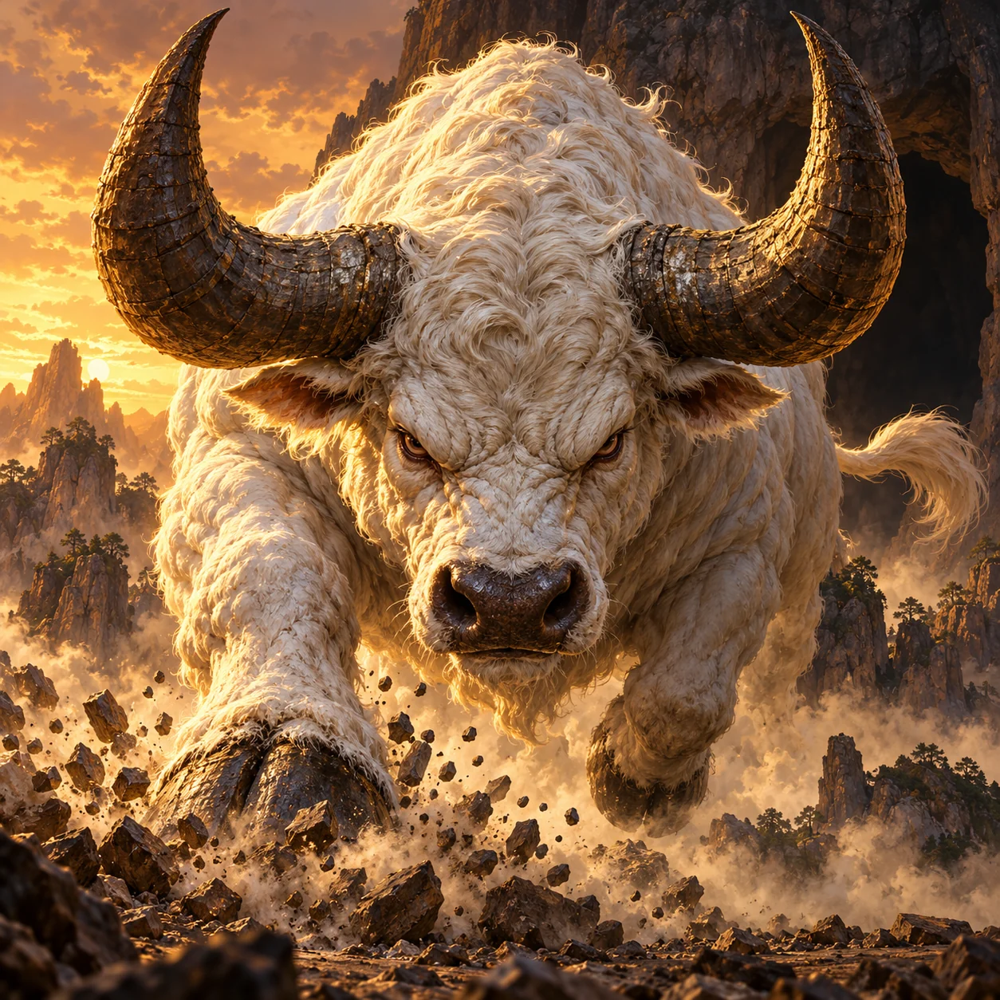
The Bull Demon King's true giant white bull form lunging toward the viewer, mountain-sized head and two iron-tower horns.
Aura: Ancaman berasal dari true form white bull bertubuh >1000 zhang dan tinggi800 zhang, kepala seperti gunung serta dua tanduk seperti iron towers (bull-demon-king-c13); hanya rubble/dust akibat fisik langkah, bukan kekuatan api.
Audit ciri dan sumber
- [object Object]
- [object Object]
- [object Object]
PNG native dilihat: satu mountain-sized WHITE bull front confrontation, dua mata dan dua horns sangat besar jelas utuh, dua forelegs aktif dan rear limbs tersamar perspektif. Debris/dust akibat hoof impact, tiny rocky hills menegaskan ukuran terdokumentasi c13; tidak ada animal pasture vibe. Tidak ada armor/staff/firewheel/wings/extra heads atau gore. Uji Sangar lolos, tanpa teks/border/watermark. Root independently viewed BOTH native final variants: A mountain-scale white bull charges toward camera, B full diagonal white bull with four legs/tail over tiny mountains. Two iron-tower-like horns and single head clear, dust/rubble physical body impact, no stolen Nezha flame wheel. Both pass seven checks.
Review sumberONE original square premium painterly cinematic Mythics illustration of BULL DEMON KING. The Bull Demon King's true giant white bull form lunging toward the viewer, mountain-sized head and two iron-tower horns.
ANATOMY: ONE giant WHITE bull, ONE bull head, TWO eyes, exactly TWO enormous horns like iron towers, FOUR hoofed legs and ONE natural bull tail. Head like a steep mountain, body over a thousand zhang long and eight hundred zhang high. No humanoid arms, armor, staff, extra heads or demonic wings. Entire original design from the novel, not a modern adaptation. [bull-demon-king-c02, bull-demon-king-c13]
MOMENT: Lunge forward head lowered toward the near viewer, nostrils flared, eyes fierce, enormous horns fully readable on both sides. One front hoof strikes the ground in the immediate foreground, the other lifted in the next stride.
POWER: No invented supernatural fire or lightning. Physical impact of a mountain-sized giant bull breaks nearby ground into rubble and drives dust outward; scale and anatomy supply menace, no gore or head regeneration scene. [bull-demon-king-c13]
SCALE & CAMERA: Extreme low-angle close frontal confrontation, mountainous white bull face dominates central square, both tower horns fully inside frame. Tiny jagged hills at its shoulders supply literal documented scale, no people required.
LIGHT & WEATHER: Single deep amber evening side light, dark rock background, sharp gold rim on white matted fur, physically raised dust.
SURFACE: rich tactile cloth, fur, scales or stone appropriate to the specified anatomy, wet water surfaces and physical dust only where mentioned.
SETTING: Rocky ground immediately outside Moyun Cave on Jilei Mountain, no barn or pasture. [bull-demon-king-c09]
MOOD: imposing, overwhelming, awe-inspiring or menacing as appropriate to the source; figure and identifying features instantly legible at 200 pixels; never cute, calm, decorative or an ordinary person or animal.
HARD CONSTRAINTS: ONE square image, premium painterly cinematic illustration with tactile brushwork rather than glossy photoreal fashion rendering; no text, lettering, logo, border, frame, watermark, nudity, gore, extra heads, limbs, fingers or duplicated anatomy; no film, game, anime or comic design, no neon outline, generic glow aura, magic ribbons or floating runes. Every effect must belong to the cited deed; environmental lighting is artistic presentation.
Loki
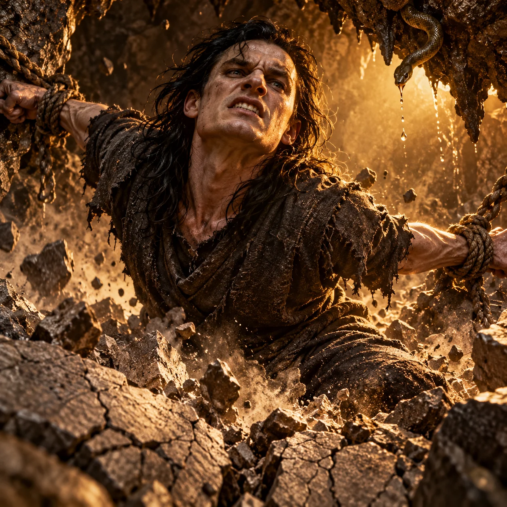
Close bound trickster causing earthquake
Aura: Documented twisting that shakes earth c24, confinement c23 and venom punishment c11; danger through active earthquake and cunning gaze
Audit ciri dan sumber
- [object Object]
- [object Object]
- [object Object]
Dua lengan terikat, wajah manusia tanpa tanduk, ular meneteskan racun dan tanah retak akibat gempa yang terdokumentasi; torso tertutup. Root independently viewed BOTH native final variants: Dua lengan terikat, wajah manusia tanpa tanduk, ular meneteskan racun dan tanah retak akibat gempa yang terdokumentasi; torso tertutup. Root melihat kedua PNG native secara langsung; keduanya lulus tujuh cek visual.
Review sumberONE original square premium painterly cinematic Mythics illustration of LOKI, Norse trickster, fair of face and evil in disposition, bound in the cavern before Ragnarok.
ANATOMY: one fair male human face, exactly two arms and two legs, fully opaque rough charcoal tunic and dark trousers; bound wrists with old rope; NO horns, NO horned helmet, no modern movie costume. One small snake overhead belongs to venom punishment setting. [loki-c01, loki-c11, loki-c16, loki-c23, loki-c24]
MOMENT: wrench both bound arms outward and twist violently toward the viewer; fair face contorted with menace, cave floor buckles under torso, rocks fall around him.
POWER: Loki twists so violently that the earth shakes: the rock slabs below rupture physically, grit cascades from cavern roof and dusty fissures widen, documented earthquakes not random magic; small venom drops from snake, no gore. [loki-c01, loki-c11, loki-c16, loki-c23, loki-c24]
SCALE & CAMERA: extreme low close half-body view from splitting rock, handsome face huge upper center, wrists visible, no giant-size claim.
LIGHT & WEATHER: a single warm side/backlight, deep walnut shadows and antique gold highlights; low-key cinematic contrast, dramatic airborne dust or natural spray appropriate to scene; fire/sun/forge variants use that actual documented fire or sun as sole dominant light instead of external glow.
SURFACE: coarse torn opaque cloth, taut old ropes, gritty fractured rock, dust, realistic skin.
SETTING: his punishment cave where Sigyn catches dripping venom; Sigyn can be omitted rather than invent an appearance, the snake and cave clearly present. [loki-c01, loki-c11, loki-c16, loki-c23, loki-c24]
MOOD: overwhelming, imposing and awe-inspiring; malign Loki menacing, living Hindu Agni revered; never cute, neutral, calm or decorative.
HARD CONSTRAINTS: no text, lettering, logo, border, frame or watermark; no extra heads, limbs or fingers; no design borrowed from film, game, anime or comic; no nudity or explicit gore; opaque clothing covers torso and legs; no generic glow aura, neon outline or energy ribbons. ONE complete square image, not a collage.
Nymph
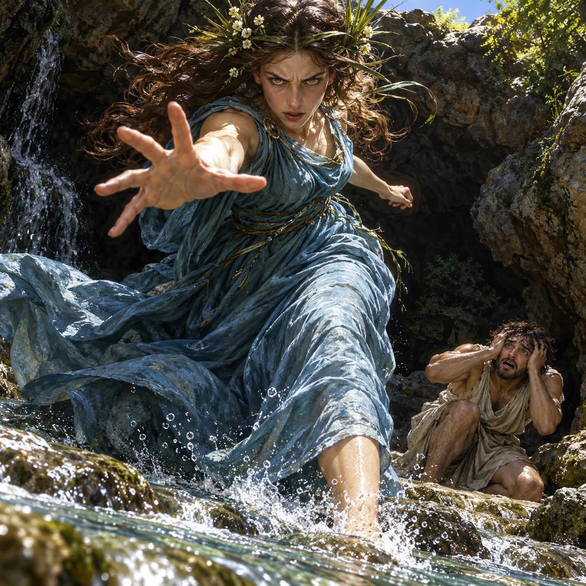
A freshwater Naiad rushing toward the viewer while a mortal is driven into nympholeptic madness at midday.
Aura: Kesan supernatural berasal dari nympholepsy yang mengacaukan mortal (nymph-c21), wanita beratribut habitat mata air (c02/c06) dan langkah/close framing; tidak ada water-control atau aura generik.
Audit ciri dan sumber
- [object Object]
- [object Object]
- [object Object]
PNG native retry dilihat: naiad berjubah biru menjejak air ke arah kamera, muka intens dan tangan foreshortened. Satu mortal di tepi kanan menggenggam kepala dengan ekspresi nympholeptic madness c21. Air terciprat secara fisik dari langkah, tidak terangkat sebagai water-control. Kepala/mata/tangan manusia wajar, pakaian penuh. Tidak ada aura, teks, frame atau watermark. Uji Sangar lolos. Root independently viewed BOTH native final variants: A dryad lunges to frighten a recoiling traveller, B naiad steps forcefully across spring before mortal clutching his head (nympholepsy). Human young-woman form source-supported, two arms, opaque gowns, no tree body/water magic invented; both seven Sangar checks pass.
Review sumberONE original square premium painterly cinematic Mythics illustration of NYMPH. A freshwater Naiad confronting the viewer at a spring while a mortal falls insensate at midday.
ANATOMY: ONE adult young woman, one head, two eyes, two arms, two legs. Fully opaque long antique Greek river-blue robe covering torso and legs, water-reed head ornament as habitat attribute. Human body, no fish tail, wings, pointed ears or extra limbs. [nymph-c02, nymph-c06]
MOMENT: Rush forward down the spring's rocky edge, one foot forcefully splashing into the near shallow water, body twisting diagonally and one open hand thrust urgently toward the viewer. Her gaze is piercing and commanding, eyebrows drawn sharply down, face full of alarming supernatural resolve rather than neutral beauty. Hair and heavy opaque robe whip with the fast forward movement. At the far lower edge a secondary mortal kneels clutching both temples, overcome with nympholeptic madness and looking terrified at her, no injury. She is the immediate overpowering cause of the encounter, not posing for a portrait.
POWER: Show the documented nympholepsy as the mortal driven into nympholeptic madness in her natural habitat, especially at midday. This is a psychological divine encounter, not neon energy, a glowing aura or water-control power. [nymph-c21]
SCALE & CAMERA: Full-body looming diagonal composition from the spring waterline, nymph fills eighty-five percent of frame height, robe sweeping toward near camera. Mortal is secondary and comparable human scale, no giant size.
LIGHT & WEATHER: A single hard midday sun shaft from above illuminates her face and moving fabric against a dark shaded spring recess, sharp chiaroscuro.
SURFACE: rich tactile cloth, fur, scales or stone appropriate to the specified anatomy, wet water surfaces and physical dust only where mentioned.
SETTING: A freshwater spring and its dark enclosing rocks with water passing naturally over the foreground stones. [nymph-c06]
MOOD: imposing, overwhelming, awe-inspiring or menacing as appropriate to the source; figure and identifying features instantly legible at 200 pixels; never cute, calm, decorative or an ordinary person or animal.
HARD CONSTRAINTS: ONE square image, premium painterly cinematic illustration with tactile brushwork rather than glossy photoreal fashion rendering; no text, lettering, logo, border, frame, watermark, nudity, gore, extra heads, limbs, fingers or duplicated anatomy; no film, game, anime or comic design, no neon outline, generic glow aura, magic ribbons or floating runes. Every effect must belong to the cited deed; environmental lighting is artistic presentation.
CRITICAL CORRECTION: Previous version failed as a calm ordinary woman at a spring. Make the face forceful and unnerving, movement urgent, and close encounter dominating; no calm neutral face, no static offering-hand pose.
Pluto
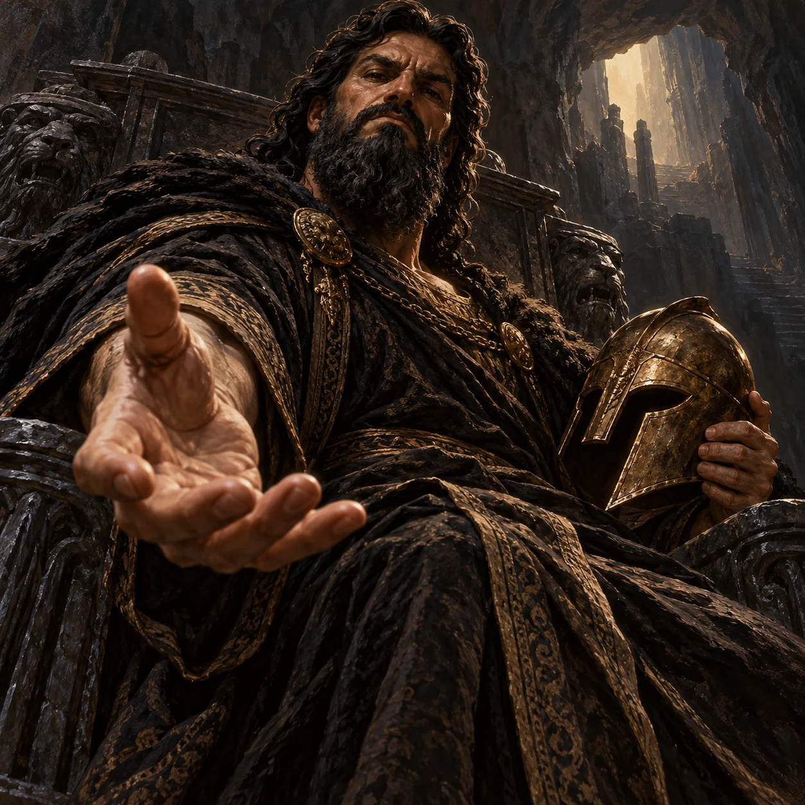
Dark-bearded Pluto leaning forward from the underworld throne with his unworn helmet.
Aura: Kesan kuasa datang dari penguasa Tartarus dan dunia bawah (pluto-q152262-c01/c04/c16), sosok regal berjanggut gelap serta sifat inexorable (c17/c18), dengan helm terdokumentasi c08 tidak diaktifkan.
Audit ciri dan sumber
- [object Object]
- [object Object]
- [object Object]
PNG asli dilihat: dark-bearded regal god close from below with outstretched hand and unworn bronze helmet, two normal hands/head/eyes, opaque dark robe. Stone throne and dark underworld entrance visible; fierce gaze dominates thumbnail. No invisibility effect/fire/trident added, lion reliefs merely editorial furniture decoration. No text/watermark/border. Uji Sangar lolos. Root independently viewed BOTH native final variants: A black-bearded underworld king commands from throne while holding helmet, B drives golden chariot with exactly four black horses into physical earth-cleft. Fully clothed, two arms, no invented hellfire; both pass. A face/helmet strongest thumbnail.
Review sumberONE original square premium painterly cinematic Mythics illustration of PLUTO. Dark-bearded Pluto leaning forward from the underworld throne with his unworn helmet.
ANATOMY: ONE adult dark-bearded regal man, one head, two eyes, two arms, two legs, fully opaque long walnut-black royal antique robe covering chest and legs. One plain antique bronze HELMET is held in his left hand, never worn because its invisibility would obscure him. No horns, trident or extra limbs. [pluto-q152262-c02, pluto-q152262-c17, pluto-q152262-c08]
MOMENT: Lean abruptly forward from a massive stone throne toward the viewer, right hand outstretched in an inexorable command, brow furrowed and eyes fixed down upon us. Helmet clenched in the other hand. Both hands readable, face enormous and imposing.
POWER: No visible invented supernatural effect: authority is expressed through inexorable gaze, commanding gesture and the documented underworld realm. Helmet is not activated, no invisibility haze. [pluto-q152262-c18, pluto-q152262-c08]
SCALE & CAMERA: Extreme low-angle close head-and-torso portrait; throne arms and near hand foreshortened toward us, deity fills almost entire frame. Human proportions, no unclaimed giant body.
LIGHT & WEATHER: One warm slit of natural light from the distant underworld entrance, low-key bronze highlights and deep rock shadow, no fire or magical glow.
SURFACE: rich tactile cloth, fur, scales or stone appropriate to the specified anatomy, wet water surfaces and physical dust only where mentioned.
SETTING: Pluto's throne deep in the dark lower world, black rock recesses behind him. Crop tightly so the accompanying queen is outside frame, not a contradictory claim about his consort. [pluto-q152262-c05, pluto-q152262-c04, pluto-q152262-c16]
MOOD: imposing, overwhelming, awe-inspiring or menacing as appropriate to the source; figure and identifying features instantly legible at 200 pixels; never cute, calm, decorative or an ordinary person or animal.
HARD CONSTRAINTS: ONE square image, premium painterly cinematic illustration with tactile brushwork rather than glossy photoreal fashion rendering; no text, lettering, logo, border, frame, watermark, nudity, gore, extra heads, limbs, fingers or duplicated anatomy; no film, game, anime or comic design, no neon outline, generic glow aura, magic ribbons or floating runes. Every effect must belong to the cited deed; environmental lighting is artistic presentation.
Tengri
Menunggu gambar yang lolos audit
Tlaloc
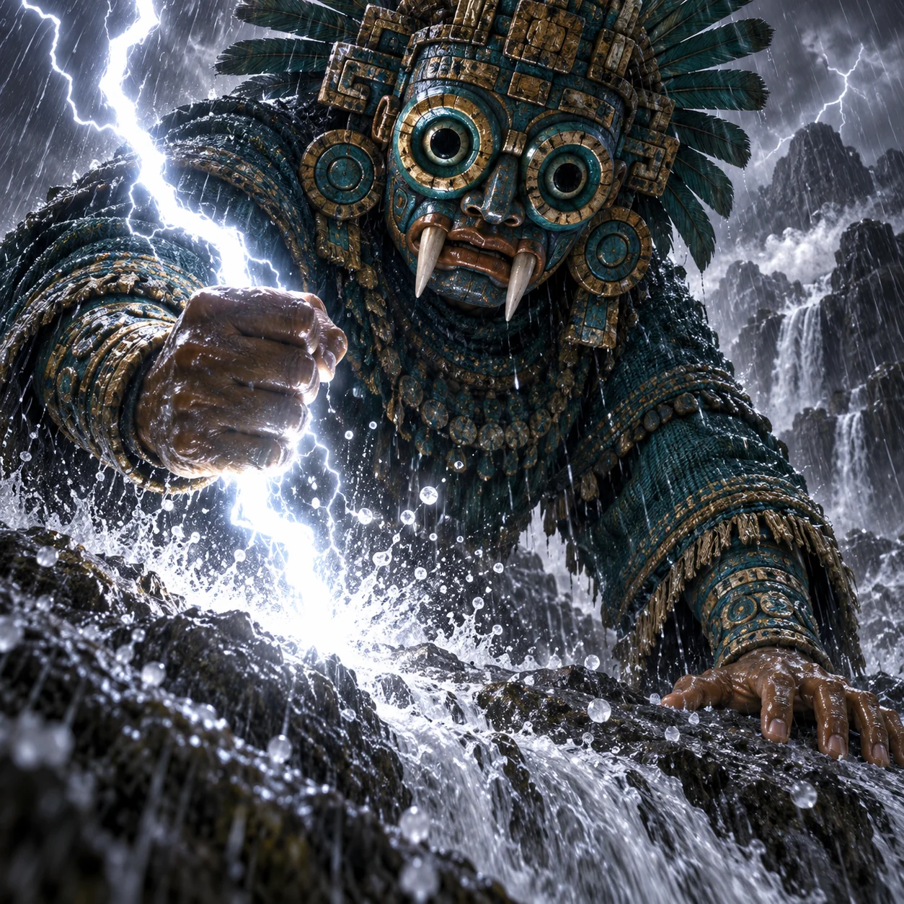
Ring-eyed, jaguar-fanged Tlaloc leaning over a mountain spring, wielding a lightning bolt that strikes wet foreground rock.
Aura: Documented rain and lightning (tlaloc-c03,c06,c15) physically strike wet stone; two ringed eyes and jaguar-like fangs (tlaloc-c16,c19) identify the imposing deity.
Audit ciri dan sumber
- [object Object]
- [object Object]
- [object Object]
- [object Object]
Native inspected: one face, two large circular eye rims with visible eyes, two long upper fangs, two arms/hands and fully opaque garments. Lightning clearly contacts wet rock; rain and foreground spring spray are physical. Strong active low-angle confrontation, no text, watermark, frame or victim. All seven Sangar answers yes. Root independently viewed BOTH native final variants: A lightning-contact fist and physical rain, final B pouring rain jar into spring at cave. Both ringed TWO eyes/two fangs/two hands/fully clothed; final B forehead eye removed and previous actual PNG retained. Both final variants pass all seven checks.
Review sumberONE original square premium painterly cinematic Mythics illustration of TLALOC, the Aztec rain, water and earthly fertility deity, revered and formidable [tlaloc-c01,tlaloc-c02].
ANATOMY: one face with exactly two unmistakable large RINGED EYES, each eye visible inside its own thick circular rim, and two prominent JAGUAR-LIKE FANGS descending from the upper mouth [tlaloc-c16,tlaloc-c19]. A conservative one-headed two-armed humanlike divine figure, no extra heads or arms. Full opaque dark teal woven high-neck tunic and long ceremonial garments cover torso, shoulders, arms and legs; only head and hands exposed. Clearly counted two hands.
MOMENT: TLALOC drives his lightning-bearing right hand down toward the slick mountain ledge in the foreground; the clear bent lightning bolt runs from his fist into the rock beside rushing water. His other hand braces against the rock as he leans forward above the low viewer. Both circular eye rims and both fangs confront the viewer, large and readable.
POWER: he wields a lightning bolt [tlaloc-c15]; physically real lightning strikes the wet rock and sends a sharp flash across falling rain and hail pellets, with water splashing at the point of contact. Rain, hail, thunder and lightning are documented powers [tlaloc-c03,tlaloc-c06]. No living victims or invented magical destruction.
SCALE & CAMERA: extremely low close oblique camera at the waterline; face and two ringed eyes dominate the upper half, foreshortened lightning hand and rock-contact action fill the lower half. No giant-body claim; authority through close framing. Full head inside square, do not crop eye rims or fangs.
LIGHT & WEATHER: dominant bright silver-white lightning illumination on his face and hands; deep shadows, side rim light, heavy rain, visible hail pellets and spray.
SETTING: dark mountain rock and spring water, from his mountain/spring associations [tlaloc-c04], no other figures.
SURFACE: rain-soaked woven fabric, tactile circular eye rims, ivory fangs, dark wet rock, aged metal or rough pottery appropriate to the held object, premium painterly brush texture. Low-key palette: warm walnut-black shadows, dark teal cloth, one brilliant silver-white light accent.
MOOD: overwhelming and awe-inspiring indigenous divine presence, composed authority in active motion; never an ordinary person, mascot, placid statue, or horror caricature. Original respectful design.
HARD CONSTRAINTS: no text, lettering, glyphs, pseudo-writing, logo, frame, border, watermark, signature, modern media/game/anime/comic designs; no nude torso or uncovered limbs except hands; no gore, victims, sacrifices or children; no extra heads, eyes, limbs or fingers; no generic glow aura, neon outline, energy ribbons, floating runes; do not add a jaguar body or animal head, because only ringed eyes and fangs are documented.
Vulcan
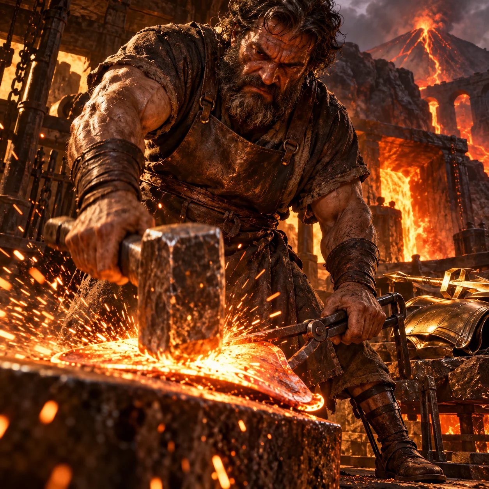
Close hammer impact in volcanic forge
Aura: Physical fire/volcanic forge c01/c05/c16 and making Aeneas' arms c08, not a mundane workshop
Audit ciri dan sumber
- [object Object]
- [object Object]
- [object Object]
Root saw native: hammer striking incandescent armor plate with tongs, fierce smith fills frame, covered torso/leather apron, two arms, brace on uneven leg. Actual volcanic forge fire c05/c16 and physical sparks only; seven Sangar checks pass. Root independently viewed BOTH native final variants: A hammer-contact close view and B full furnace/forged-shield action. Both one head/two arms/fully clothed smith, documented lame leg braced and volcanic fire physically present. Both pass all seven Sangar checks; A chosen for threat and clear impact.
Review sumberONE original square premium painterly cinematic Mythics illustration of VULCAN, Roman god of fire and forge, dreaded master of volcanic fire.
ANATOMY: one head, exactly two arms and two legs; weathered powerful lame blacksmith, one leg visibly unevenly braced rather than extra limbs; fully opaque soot-stained tunic and heavy leather apron covering chest and legs; hammer and tongs ordinary smithing tools. [vulcan-c01, vulcan-c05, vulcan-c08, vulcan-c09, vulcan-c11, vulcan-c16, vulcan-c18]
MOMENT: slam the huge smithing hammer toward the viewer onto an incandescent armor plate, bent torso and grim focused face behind flying sparks, tongs secure the plate.
POWER: real forge fire and volcanic furnace heat flare while he forges arms for Aeneas; hot metal sparks explode at hammer impact, no generic magic aura; Jupiter's thunderbolt metalwork may rest on anvil as documented craft, not lightning fired by Vulcan. [vulcan-c01, vulcan-c05, vulcan-c08, vulcan-c09, vulcan-c11, vulcan-c16, vulcan-c18]
SCALE & CAMERA: extreme low close view beside anvil; hammer head and sparks enormous foreground, face dominant upper half.
LIGHT & WEATHER: a single warm side/backlight, deep walnut shadows and antique gold highlights; low-key cinematic contrast, dramatic airborne dust or natural spray appropriate to scene; fire/sun/forge variants use that actual documented fire or sun as sole dominant light instead of external glow.
SURFACE: rough soot-black leather, cracked volcanic rock, real incandescent metal, iron scale and scarred skin.
SETTING: Vulcan's forge at Mount Aetna, black volcanic rock, subordinate molten furnace openings. [vulcan-c01, vulcan-c05, vulcan-c08, vulcan-c09, vulcan-c11, vulcan-c16, vulcan-c18]
MOOD: overwhelming, imposing and awe-inspiring; malign Loki menacing, living Hindu Agni revered; never cute, neutral, calm or decorative.
HARD CONSTRAINTS: no text, lettering, logo, border, frame or watermark; no extra heads, limbs or fingers; no design borrowed from film, game, anime or comic; no nudity or explicit gore; opaque clothing covers torso and legs; no generic glow aura, neon outline or energy ribbons. ONE complete square image, not a collage.
Sekhmet
Menunggu gambar yang lolos audit
Ahura Mazda
Menunggu gambar yang lolos audit
Ardhanārīśvara
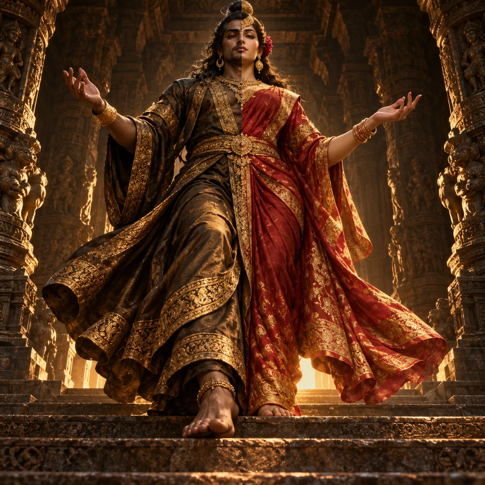
Respectful single equal vertical Shiva-Parvati union, subject right male/viewer-left and subject left female/viewer-right, stepping forward in opaque robes.
Aura: Equal visibly united body c01/c02/c04/c07 and active sovereign stride symbolize universal synthesis c03; low natural backlight and editorial sacred scale, no invented power glow.
Audit ciri dan sumber
- [object Object]
- [object Object]
- [object Object]
Native viewed: whole single united deity steps forward down sacred stairs, robe moving diagonally. Anatomical right male on viewer-left, left female on viewer-right, equal vertical face/body split with one central nose/mouth. One head/two eyes/two arms/two open hands/two feet. Masculine half dark-gold robe and feminine half crimson sari fully opaque. Low viewpoint and sacred scale convey grandeur without invented magic emission; no text, watermark, gore or film design. Root independently viewed BOTH native final variants: A close split-face presentation and B full advancing step; single integrated head/body, subject-right male on viewer-left and subject-left female on viewer-right, two arms, opaque garments. Iconic split unmistakable, no unclaimed trident/third eye. Both pass all Sangar checks; B chosen for action.
Review sumberONE original square premium painterly cinematic Mythics illustration. Imposing undeniable main subject, high-contrast low-key dark walnut/antique gold palette, textured brushwork and physically tactile surfaces, legible silhouette at 200 pixels. HARD CONSTRAINTS: no text, lettering, pseudo-script, logo, watermark, signature, border or frame; no borrowed film/game/anime/comic design; no nudity or explicit gore; no generic glowing aura, neon lines, energy ribbons, floating runes, or unsupported anatomy.
ANATOMY: ONE integrated ARDHANARISVARA, Shiva-Parvati joined and EQUALLY divided vertically. Anatomical RIGHT is male Shiva = VIEWER LEFT. Anatomical LEFT is female Parvati = VIEWER RIGHT. ONE head with one centered nose and mouth, ONE eye on each side; right male face/body contour on viewer-left clearly angular and robust, left female on viewer-right clearly soft and graceful. TWO arms and TWO legs as conservative editorial human-form anatomy, no extra limbs or unsupported iconographic attributes. Fully opaque dark antique-gold robe on male viewer-left and crimson-gold sari on female viewer-right, matching centerline down the whole figure. No bare torso, no third eye, no trident, no crescent or snakes. [ardhanarisvara-c01/c02/c04/c07] MOMENT: Step forcefully forward down one large sacred stone step, hips and robe flow diagonally but upper torso and face stay FRONTAL so viewer can compare equal halves; both hands lifted apart in open balancing gestures, gaze downward commanding and compassionate. POWER: no physical magic effect, unity of universe's masculine/feminine principles expressed by body division and balanced movement. [ardhanarisvara-c03] SCALE & CAMERA: full-body worm-eye devotional composition, entire god from head through two feet fills upper 85 percent square, tiny abstract court steps at bottom provide editorial hierarchical sacred scale, no literal giant body assertion, no people necessary. LIGHT & WEATHER: one natural dawn shaft from distant doorway, dark walnut sacred space with hard gold rim along moving opaque cloth, no halo. SURFACE: thick woven robes, worn stone step, textured skin. SETTING: editorial symbolic sacred architecture for united deity, not claimed historical site. MOOD: sublime imposing respect for living Hindu tradition, never two separate people, not a static costume fashion image.
Meretseger
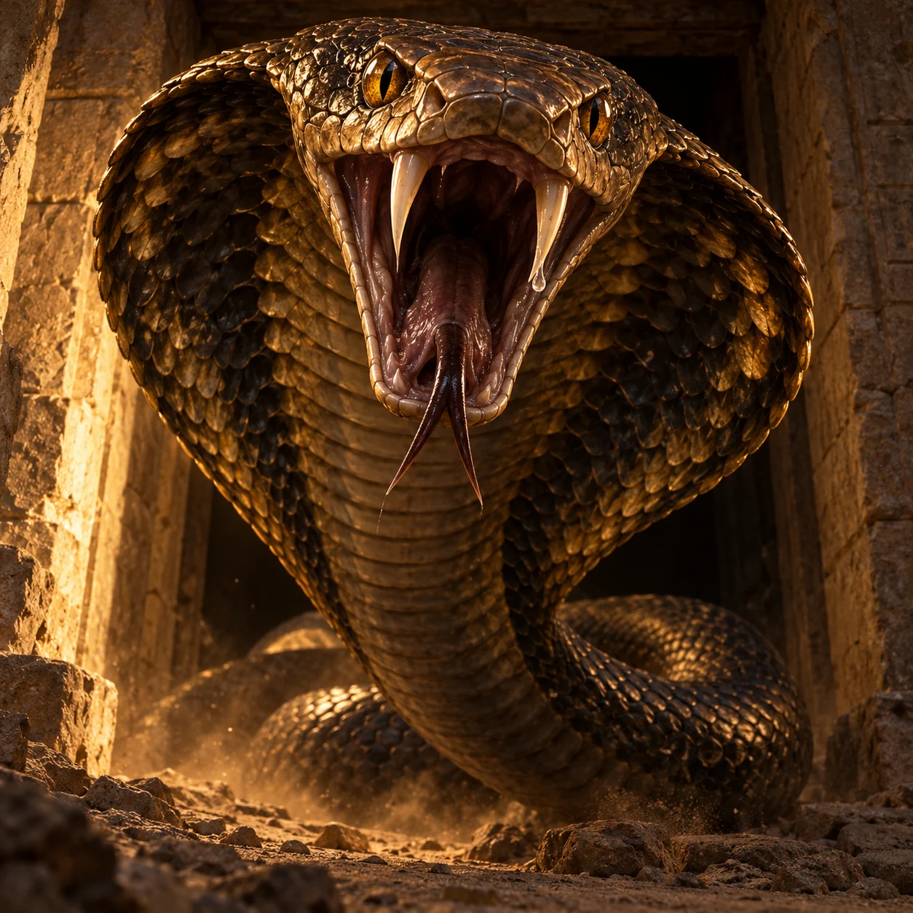
Meretseger as a living one-headed cobra guardian lunging from a Valley of Kings tomb doorway, expanded hood and visible venom fangs.
Aura: Protective cobra form c01/c06 and immediate poisonous-bite threat c05, close hood/fang dominance and dark tomb staging c01/c04; no generic aura.
Audit ciri dan sumber
- [object Object]
- [object Object]
- [object Object]
Native viewed: living one-headed cobra rears/lunges from guarded tomb doorway, expanded hood and open mouth dominate square, two main pale venom fangs and a clear liquid bead at one fang, forked tongue, two natural eyes and one coiled legless body. Dry bronze-dark scales and warm lamp rim, disturbed dust, no human torso/crown/extra heads or magical poison cloud. No text, gore or watermark. Close threat makes divine guardian unmistakably active. Root independently viewed BOTH native final variants: A live cobra striking directly with two fangs/venom droplet, B full coil sweeps temple stair with large hood and raised open mouth. Single head/two eyes/no limbs, protected tomb setting, no human body or magic cloud; both pass.
Review sumberONE original square premium painterly cinematic Mythics illustration. Imposing undeniable main subject, high-contrast low-key dark walnut/antique gold palette, textured brushwork and physically tactile surfaces, legible silhouette at 200 pixels. HARD CONSTRAINTS: no text, lettering, pseudo-script, logo, watermark, signature, border or frame; no borrowed film/game/anime/comic design; no nudity or explicit gore; no generic glowing aura, neon lines, energy ribbons, floating runes, or unsupported anatomy.
ANATOMY: MERETSEGER as a LIVING cobra goddess protecting the Theban necropolis: exactly ONE cobra head, ONE expanded cobra hood, ONE continuous coiled legless snake body, two natural eyes, ordinary cobra mouth with TWO main venom fangs. NO human torso, woman face, crown, solar disk, horns, wings, extra heads or fantasy anatomy. [meretseger-c01/c06] MOMENT: Rear and launch a warning strike directly at the viewer from a guarded tomb doorway, mouth open so fangs visibly dominate foreground, hood flares broad across most image; coiled body visible behind lower hood, never a calm snake at rest. POWER: poisonous bite c05, one real translucent liquid droplet at a fang, no spray beam, magical poison cloud or glowing venom. [meretseger-c05] SCALE & CAMERA: extreme close low macro threat, head and hood fill top 85 percent, sharp fangs and gaze readable at 200px; apparent enormity through close foreshortening rather than unsupported literal giant body. LIGHT & WEATHER: one low off-frame warm tomb lamp gives sharp gold rim, deep black shadow, a little ordinary desert dust disturbed by moving coils. SURFACE: individually textured dark bronze/gold dry cobra scales, moist mouth and fang, dusty worn tomb stone. SETTING: guarded Valley of Kings rock-cut tomb entrance, dark masonry only peripheral, no legible hieroglyphs or writing. [meretseger-c01/c04] MOOD: divine protector warning trespassers, imposing sacred dread, not evil villain or cute ordinary animal in landscape.
Nephthys
Menunggu gambar yang lolos audit
Rhea
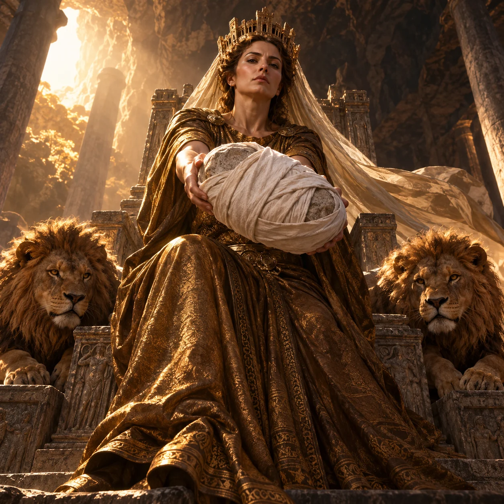
Throne queen offering disguised stone
Aura: Documented Titan mother c01, mural crown/throne/two lions c21 and swaddled-stone rescue c05
Audit ciri dan sumber
- [object Object]
- [object Object]
- [object Object]
Native seen by root: Rhea leans and offers visibly stone-filled swaddle from large throne, mural crown/veil, two flanking lions, opaque full gown. Strong frontal sacred queen hierarchy; all Sangar checks pass, no emitted magic. Root independently viewed BOTH native final variants: A full throne offering and B foreshortened close offering; mural crown/veil, exactly two lions, clear swaddled stone, two arms, fully clothed. Seven Sangar criteria pass; ceremonial scale editorial.
Review sumberONE original square premium painterly cinematic Mythics illustration of RHEA, Greek Titan mother of the gods who saved infant Zeus from Cronos.
ANATOMY: one human female head, exactly two arms; clear mural crown like a small battlemented city, long veil and opaque dark gold full gown; documented throne with exactly two lions crouching one to each side; a large stone tightly wrapped in white swaddling cloth, NOT a real baby. [rhea-c01, rhea-c05, rhea-c13, rhea-c21]
MOMENT: lean forward from the immense throne, thrust the clearly stone-shaped swaddled bundle toward the unseen Cronos/viewer, intent protective gaze and sweeping veil.
POWER: No emitted magical power: she actively offers the disguised stone in the documented rescue ruse; overwhelming divine hierarchy, crown and lions convey might. [rhea-c01, rhea-c05, rhea-c13, rhea-c21]
SCALE & CAMERA: extreme low full-figure throne view; goddess and two crouching flanking lions dominate 90 percent; sacred symbolic hierarchy.
LIGHT & WEATHER: a single warm side/backlight, deep walnut shadows and antique gold highlights; low-key cinematic contrast, dramatic airborne dust or natural spray appropriate to scene; fire/sun/forge variants use that actual documented fire or sun as sole dominant light instead of external glow.
SURFACE: carved antique throne, veiled heavy woven fabric, worn stone bundle, lions' coarse fur.
SETTING: Crete, site of her rescue of Zeus and worship; cavernous royal setting is editorial staging. [rhea-c01, rhea-c05, rhea-c13, rhea-c21]
MOOD: overwhelming, imposing and awe-inspiring; malign Loki menacing, living Hindu Agni revered; never cute, neutral, calm or decorative.
HARD CONSTRAINTS: no text, lettering, logo, border, frame or watermark; no extra heads, limbs or fingers; no design borrowed from film, game, anime or comic; no nudity or explicit gore; opaque clothing covers torso and legs; no generic glow aura, neon outline or energy ribbons. ONE complete square image, not a collage.
Al-‘Uzzá
Menunggu gambar yang lolos audit
Anahita
Menunggu gambar yang lolos audit
Anat
Menunggu gambar yang lolos audit
Ennead
Menunggu gambar yang lolos audit
Frigg
Menunggu gambar yang lolos audit
Hubal
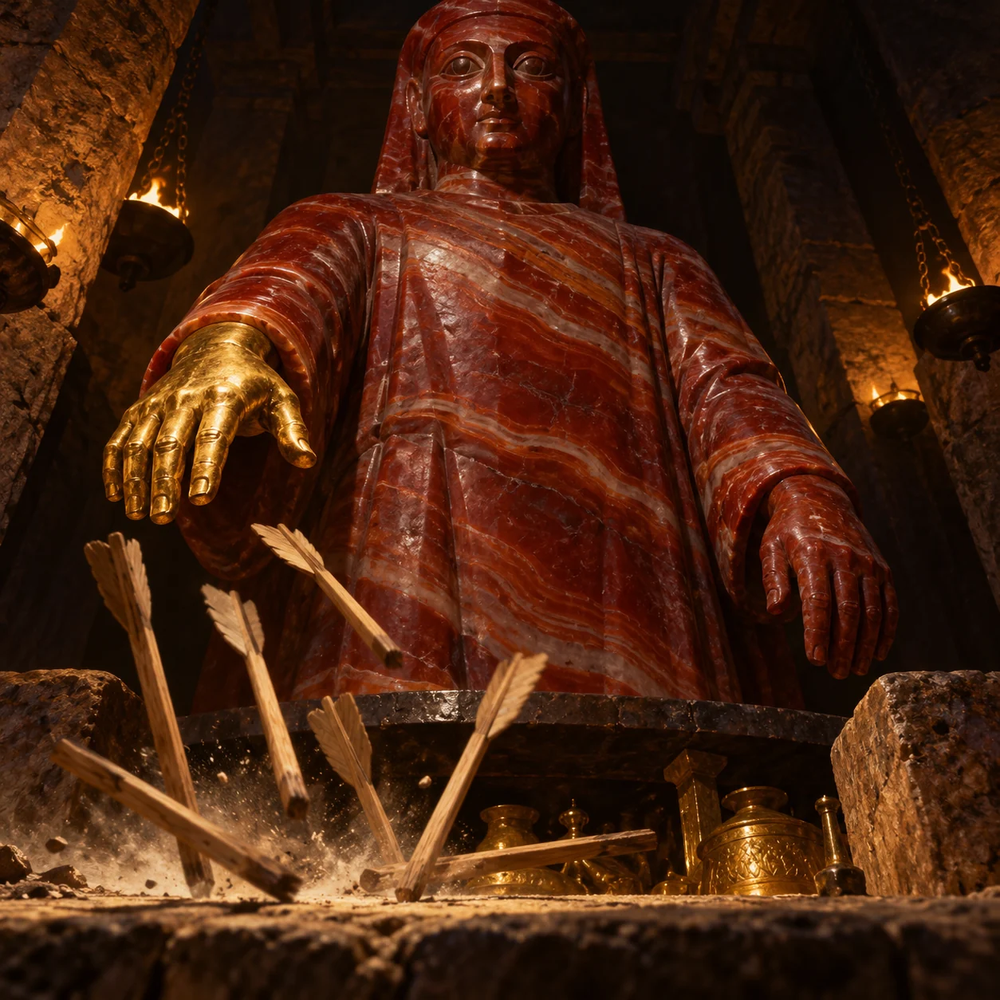
Human-shaped red-agate Hubal icon with its replacement gold right hand looming above a physical divination-arrow cast before the sacred treasure pit.
Aura: The red-agate human-shaped icon and single gold right hand (hubal-c02,c05,c06,c09) dominate the shrine; arrows physically cast before it convey its documented divination role (hubal-c03,c10).
Audit ciri dan sumber
- [object Object]
- [object Object]
- [object Object]
Native inspected: one human-shaped red-agate icon wearing a carved opaque robe, one golden RIGHT hand on viewer-left, one red-agate left hand. Both hands show normal five-finger configuration, no extra limbs. Recognizable arrow cast physically impacts foreground stone and lifts ordinary dust; treasure pit below, ordinary lamp light behind. Fixed statue dominates framing with downward carved gaze; the decisive event is arrow casting, consistent with documented statue role. No text, watermark, frame, nudity, gore, lunar or generic magic effect. All seven Sangar answers yes. Root independently viewed BOTH native final variants: A frontal and B oblique source-documented red-agate HUMAN-SHAPED IDOL with GOLD RIGHT HAND on viewer-left, red-agate other hand. Divination arrows/lots fall physically before treasury pit, cinematic ceremony supplies moment while idol stays fixed as source requires. No invented living human anatomy, moon or energy. Both awe-inspiring and identifiable, seven checks pass for documented idol manifestation.
Review sumberONE original square premium painterly cinematic Mythics illustration of HUBAL, the historically documented pre-Islamic Arabian deity depicted through his human-shaped red-agate cult statue, in a respectful historical shrine context [hubal-c01,hubal-c02,hubal-c05].
ANATOMY: the statue is ONE HUMAN-SHAPED FIGURE carved from RED AGATE, one head with two carved eyes, two arms and two legs under a plainly carved full opaque stone robe. Its RIGHT HAND is a replacement hand made of SOLID GOLD, clearly connected to the right wrist; only the RIGHT hand is gold, and the other hand and rest of the statue remain red agate [hubal-c05,hubal-c06,hubal-c09]. Exactly five fingers on each represented hand. Natural polished red-agate mineral banding across face and robe; unmistakably stone icon, not a living person, monster, plain wood carving or ordinary human. No crown, horns, weapons, moons, inscriptions or unclaimed animal traits.
POWER: wooden DIVINATION ARROWS are being CAST AND FALLING in the physical space BEFORE the icon. The casting event and belief that the icon controls divination are documented [hubal-c03,hubal-c10]. Arrows obey gravity and make contact with real stone; they do not levitate, glow or form supernatural beams. No lightning, fire magic, generic aura or celestial power. The statue itself remains a statue; do not animate it or invent its bodily motion.
MOMENT: a handful of unmarked wooden divination arrows tumble DOWNWARD directly in front of the icon's waist and strike the stone ledge at the viewer's feet, kicking up ordinary dust. The fixed statue looms with its gold RIGHT palm angled down over that real casting space, not holding a weapon. Its carved agate gaze looks down toward the viewer. Capture the event at arrow impact, not a static museum portrait.
SCALE & CAMERA: extreme low frontal close perspective from the stone ledge, statue face and upper robe fill upper two-thirds; its gold RIGHT hand appears prominently on the VIEWER'S LEFT, completely separate from the agate left hand on viewer's right. Both arms originate coherently from statue shoulders. Arrow impacts and glimpse of dark treasure pit fill lower foreground. No unsupported giant size claim; dominance comes from camera and close framing. Whole head remains inside square.
LIGHT & WEATHER: dominant ordinary amber oil-lamp light comes from low off-frame, raking through agate mineral bands and catching the single gold replacement hand; deep walnut-black shadows, dense tactile darkness and ordinary dust from the falling arrows. No glowing body envelope, magic ribbons, moonlight or fire that originates from the idol.
SURFACE: ancient polished red-agate mineral banding, aged solid-gold hand, carved opaque stone robe folds, weathered stone floor, battered unmarked wooden arrows and rough precious-metal treasure objects. Painterly brush texture, rich crimson/walnut shadows and one warm gold light accent.
SETTING: dark ancient shrine interior over a sacred treasure pit, from the documented historical account [hubal-c07]. Do not depict the modern Kaaba exterior or contemporary Islamic symbols, calligraphy, people, Prophet, religious mockery or present-day ritual. No text/labels or invented narrative scene.
MOOD: imposing and uncanny historical divine icon, overwhelming close presence and decisive divination event; not a decorative museum display, ordinary man or placid collectible.
HARD CONSTRAINTS: no text, writing, pseudo-writing, logo, border, frame, watermark or signature; no nudity, gore or victims; no extra heads, arms, legs, hands or fingers; no moon, lunar crown or lunar power because that theory is disputed/rejected [hubal-c17]; no generic aura, runes, neon outline, energy ribbon; no film/game/anime/comic design. All supernatural interpretation stays within documented arrow-divination belief; movement belongs only to the physically cast arrows.
Inari
Menunggu gambar yang lolos audit
Manāt
Menunggu gambar yang lolos audit
Mnemosyne
Menunggu gambar yang lolos audit
Tammuz
Menunggu gambar yang lolos audit